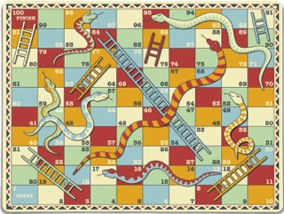

A collection of 27 C++ programming assignments, from Hello World, Classes, and Polymorphism, to Data Structures, Snakes and Ladders, and Sorting Algorithms.
Snake and Ladders Program
Output is the best ending of each turn, and the total turns for the board. The following board is used for this assignment.

// Caden Roberts
#include <iostream>
class Board {
public:
int board[100]{0};
Board() {}
void tunnel(int start, int end) { board[start-1] = end - start; }
void minmovesguider(int position=1, int moves=0) {
if (position<95){
if (position>1) std::cout << "Turn end at " << position << ".\n";
int best[6]{board[position]+1, board[position+1]+2, board[position+2]+3, board[position+3]+4, board[position+4]+5, board[position+5]+6};
return minmovesguider(position+*std::max_element(best, best+6), moves+1);
} else if (position<100){
std::cout << "Turn end at " << position << ".\n";
moves++;
}
std::cout << "Reached final square 100.\nMinimum moves for the board is " << moves << ".\n";
}
};
int main () {
Board Board;
Board.tunnel(3,21);
Board.tunnel(8,30);
Board.tunnel(28,84);
Board.tunnel(58,77);
Board.tunnel(75,86);
Board.tunnel(80,100);
Board.tunnel(90,91);
Board.tunnel(17, 13);
Board.tunnel(88, 18);
Board.tunnel(62,22);
Board.tunnel(52, 29);
Board.tunnel(57,40);
Board.tunnel(95,51);
Board.tunnel(97,79);
Board.minmovesguider(1, 0);
return 0;
} Sorting Functions Program
An exam file take an input of size of an array to sort, then the array is created and all sorting function runtimes are compared.
#include <iostream>
#include <iomanip>
#include <cmath>
#include <thread>
#include <cstdlib>
#include <chrono>
#include <ctime>
using namespace std;
using namespace std::chrono;
struct sortRoutine {
void (*function)( int *, size_t );
const char * name;
};
int *getRandomNumbers (size_t num, int seed);
void printArray (int *array, size_t count);
void disarrangeArray (int *array, size_t count, size_t numberOfChanges);
bool checkSort (int *array, size_t count);
duration<double> sortAndTime (int* testArray, size_t theSize, sortRoutine theTest, bool print =false);
/*************************
** Sample Sort Functions Provided
*************************/
void shakerSort (int *array, size_t count);
void cQuickSort (int *array, size_t count);
void quickSortBook (int *array, size_t count);
/*************************
** Student Created Sort Function
*************************/
void bubbleSort (int *array, size_t count);
void selectionSort(int *data, size_t n);
void insertionSort(int *data, size_t n);
void bubbleSortOptimized (int *array, size_t count);
void quickSort (int *array, size_t count);
void mergeSort (int *array, size_t count);
void quickSortNonRecursive (int *array, size_t count);
void nonRecursiveMergeSort (int *array, size_t count);
void quickSortThreaded (int *array, size_t count);
sortRoutine yourSortRoutines[] = {
{shakerSort, "a sample Shaker Sort"},
{quickSortBook, "the Quick Sort from the Book"},
{bubbleSort, "the Bubble Sort"},
{bubbleSortOptimized, "your Optimized Bubble Sort"},
{selectionSort, "your Selection Sort"},
{insertionSort, "your Insertion Sort"},
{cQuickSort, "the C++ Built-in Quick Sort"},
{quickSort, "your Quick Sort"},
{quickSortNonRecursive, "your Non-Recursive Quick Sort"},
{quickSortThreaded, "your Multi-Threaded Quick Sort"},
{mergeSort, "your Merge Sort"},
{nonRecursiveMergeSort, "your Non-Recursive Merge Sort"},
{nullptr , nullptr }
};
long long checkSum;
int main(int argc, const char * argv[]) {
size_t inputSize{0};
char inputChar;
cout << "CIST 004B Sorting Assignment. Worth 20 points\n\n" << flush;
do {
cout << "Enter the size of Array you wish to sort (not more than 100,000,000): ";
cin >> inputSize;
if (inputSize > 100000000) cout << "Please try again!\n";
} while (inputSize > 100000000 );
do {
cout << "Do you wish a single run (Y/N): ";
cin >> inputChar;
inputChar = toupper (inputChar);
} while (inputChar != 'Y' && inputChar != 'N');
if (inputChar == 'Y'){
for ( size_t i{0} ;yourSortRoutines[i].function != nullptr ; ++ i ){
cout << fixed << setprecision(6);
int* testArray = getRandomNumbers (inputSize, 0);
cout << "\nNow executing " << yourSortRoutines[i].name &$60< " of " << inputSize <<" items.\n";
duration<double> time_span_r = sortAndTime(testArray, inputSize, yourSortRoutines[i], true);
cout << static_cast<char>(toupper(yourSortRoutines[i].name[0])) << &yourSortRoutines[i].name[1] << " took " << setw(7) << time_span_r.count() << " Seconds.\n";
disarrangeArray (testArray, inputSize, inputSize*0.0005 +1);
cout << "Now Executing " << yourSortRoutines[i].name << " of " << inputSize << " mostly (99.9%) sorted items.\n";
time_span_r = sortAndTime(testArray, inputSize, yourSortRoutines[i], true);
cout << static_cast<char>(toupper(yourSortRoutines[i].name[0])) << &yourSortRoutines[i].name[1] << " took " << setw(8) << time_span_r.count() << " Seconds.\nNow Executing " << yourSortRoutines[i].name << " of " << inputSize << " pre-sorted items.\n";
time_span_r = sortAndTime(testArray, inputSize, yourSortRoutines[i], true);
cout << static_cast<char>(toupper(yourSortRoutines[i].name[0])) << &yourSortRoutines[i].name[1] << " took " << setw(8) << time_span_r.count() << " Seconds.\n";
delete[] (testArray-2);
}
cout << endl;
} else {
size_t ArraySize{0};
time_t rawtime;
cout << "\nTesting every Sort Routine with array sizes from 0 to " << inputSize << " numbers.\n";
do {
if (ArraySize % 100 == 1 ) {
if (ArraySize == 1) cout << "Starting at:\t\t\t";
time (&rawtime);
char str[26];
cout << '\t' << ctime_r( &rawtime, str ) << setw(log10(inputSize)+1) << ArraySize-1 ;
}
if (ArraySize % 10 == 9 ) cout << " ." << flush;
for ( size_t i{0} ;yourSortRoutines[i].function != nullptr ; ++ i ){
int* testArray = getRandomNumbers (ArraySize, 0);
sortAndTime(testArray, ArraySize, yourSortRoutines[i], true);
delete[] (testArray-2);
}
} while(ArraySize++ < inputSize);
cout << endl;
time (&rawtime);
cout << "Finished at:\t\t\t\t" << ctime(&rawtime) << endl;
}
return 0;
}
void shakerSort (int *array, size_t count) {
if (count <= 1) return;
size_t p, i;
for (p = 1; p <= count / 2; p++) {
bool doneEarlyOptimization {true};
for (i = p - 1; i < count - p; i++){
if (array[i] > array[i+1]) {
int temp = array[i+1];
array[i+1] = array[i];
array[i] = temp;
doneEarlyOptimization = false;
}
}
for (i = count - p - 1; i >= p; i--) {
if (array[i] < array[i-1]) {
int temp = array[i-1];
array[i-1] = array[i];
array[i] = temp;
doneEarlyOptimization = false;
}
}
if (doneEarlyOptimization) break;
}
return;
}
int cQuickSortCompare (const void * a, const void * b) { return ( *(int*)a - *(int*)b ); }
void cQuickSort (int *array, size_t count) {
qsort (array, count, sizeof(int), cQuickSortCompare);
return;
}
void bubbleSort (int *array, size_t count) {
if (count <= 1) return;
for (int i = 0, a; i < count-1; i++) for (int j = 0; j < count-i-1; j++) if (array[j] > array[j+1]) {
a = array[j];
array[j] = array[j+1];
array[j+1] = a;
}
return;
}
void bubbleSortOptimized (int *array, size_t count){
if (count <= 1) return;
for (int i=0, a=1; i < count-1; i++, a=1) {
for (int j = 0; j < count-i-1; j++) if (array[j] > array[j+1]) {
a=array[j];
array[j] = array[j+1];
array[j+1]=a;
a=0;
}
if (a) break;
}
return;
}
void selectionSort(int *data, size_t n){
size_t i, j, index_of_largest;
int largest;
if (n <= 1) return;
for (i = n-1; i > 0; --i) {
largest = data[0];
index_of_largest = 0;
for (j = 1; j <= i; ++j) if (data[j] > largest) {
largest = data[j];
index_of_largest = j;
}
largest = data[i];
data[i] = data[index_of_largest];
data[index_of_largest] = largest;
}
};
void insertionSort(int *data, size_t n){
int key, j;
for (int i = 1; i < n; i++) {
key = data[i];
j = i - 1;
while (j >= 0 && data[j] > key) {
data[j+1] = data[j];
j--;
}
data[j+1] = key;
}
};
void mergeSort(int data[ ], size_t n){
size_t n1, n2;
if (n > 1) {
n1 = n / 2;
n2 = n - n1;
mergeSort(data, n1);
mergeSort((data + n1), n2);
int *temp = new int[n1+n2];
size_t copied = 0, copied1 = 0, copied2 = 0, i;
while ((copied1 < n1) && (copied2 < n2)) {
if (data[copied1] < (data + n1)[copied2]) temp[copied++] = data[copied1++];
else temp[copied++] = (data + n1)[copied2++];
}
while (copied1 < n1) temp[copied++] = data[copied1++];
while (copied2 < n2) temp[copied++] = (data+n1)[copied2++];
for (i = 0; i < n1+n2; ++i) data[i] = temp[i];
delete [ ] temp;
}
}
void nonRecursiveMergeSort(int* array, size_t count) {
size_t n1, n2;
for (size_t size = 1; size < count; size *= 2) for (size_t left_start = 0; left_start < count; left_start += 2 * size) {
n1 = size;
if (left_start + n1 > count) n1 = count - left_start;
n2 = size;
if (left_start + n1 + n2 > count) n2 = count - left_start - n1;
int temp[n1 + n2];
size_t i1 = 0, i2 = 0;
for (size_t i = 0; i < n1 + n2; ++i) {
if (i1 < n1 && i2 < n2) {
if (array[left_start + i1] < array[left_start + n1 + i2]) {
temp[i] = array[left_start + i1];
++i1;
} else {
temp[i] = array[left_start + n1 + i2];
++i2;
} else if (i1 < n1) {
temp[i] = array[left_start + i1];
++i1;
} else {
temp[i] = array[left_start + n1 + i2];
++i2;
}
}
for (size_t i = 0; i < n1 + n2; ++i) array[left_start + i] = temp[i];
}
}
void quickSort (int *array, size_t count){
if (count <= 1) return;
int pivot = array[0], swapper;
size_t i = 1, j = count - 1;
while (i <= j) {
while (i < count && array[i] < pivot) i++;
while (j > 0 && array[j] >= pivot) j--;
if (i < j) {
swapper = array[j];
array[j] = array[i];
array[i] = swapper;
}
}
swapper = array[0];
array[0] = array[j];
array[j] = swapper;
quickSort(array, j);
quickSort(array + j + 1, count - j - 1);
}
void quickSortNonRecursive(int *array, size_t count) {
if (count <= 1) return;
int stack[count];
int top = -1;
stack[++top] = 0;
stack[++top] = count - 1;
while (top >= 0) {
int end = stack[top--];
int start = stack[top--];
int pivot = array[start];
int i = start + 1;
int j = end;
while (i <= j) {
while (i <= end && array[i] < pivot) i++;
while (j > start && array[j] >= pivot) j--;
if (i < j) {
int temp = array[i];
array[i] = array[j];
array[j] = temp;
}
}
int temp = array[start];
array[start] = array[j];
array[j] = temp;
if (j - 1 > start) {
stack[++top] = start;
stack[++top] = j - 1;
}
if (j + 1 < end) {
stack[++top] = j + 1;
stack[++top] = end;
}
}
}
void quickSortThreaded (int *array, size_t count){
static size_t threads;
if (count <= 1) return;
int pivot = array[0], swapper;
size_t i = 1, j = count - 1;
while (i <= j) {
while (i < count && array[i] < pivot) i++;
while (j > 0 && array[j] >= pivot) j--;
if (i < j) {
swapper = array[j];
array[j] = array[i];
array[i] = swapper;
}
}
swapper = array[0];
array[0] = array[j];
array[j] = swapper;
if (threads<500){
threads+=2;
thread leftThread(quickSortThreaded, array, j);
thread rightThread(quickSortThreaded, array + j + 1, count - j - 1);
leftThread.join();
rightThread.join();
} else {
quickSortThreaded(array, j);
quickSortThreaded(array + j + 1, count - j - 1);
}
};
void partitionBook(int data[ ], size_t n, size_t& pivot_index) {
int pivot = data[0];
size_t too_big_index = 1;
size_t too_small_index = n-1;
while (too_big_index <= too_small_index) {
while ((too_big_index < n) && (data[too_big_index] <= pivot)) too_big_index++;
while (data[too_small_index] > pivot) too_small_index--;
if (too_big_index < too_small_index){
int temp = data[too_small_index];
data[too_small_index] = data[too_big_index];
data[too_big_index] = temp;
}
}
pivot_index = too_small_index;
data[0] = data[pivot_index];
data[pivot_index] = pivot;
}
void quickSortBook(int data[ ], size_t n) {
size_t pivot_index;
size_t n1;
size_t n2;
if (n > 1) {
partitionBook(data, n, pivot_index);
n1 = pivot_index;
n2 = n - n1 - 1;
quickSortBook(data, n1);
quickSortBook((data + pivot_index + 1), n2);
}
}
duration<double> sortAndTime (int* testArray, size_t theSize, sortRoutine theTest, bool print){
high_resolution_clock::time_point t1 = high_resolution_clock::now();
theTest.function (testArray, theSize);
high_resolution_clock::time_point t2 = high_resolution_clock::now();
if ( !checkSort (testArray, theSize) && print){
cout << "Array size of: " << theSize << " contents after " << theTest.name << " completed.\n";
printArray (testArray, theSize);
}
return t2 - t1;
}
int* getRandomNumbers(size_t num, int seed =0) {
int *arr = nullptr;
checkSum = 0LL;
arr = new int[num +4];
arr[0] = arr [1] = 999999;
arr += 2;
srand(seed);
int rnum = static_cast<int>(num);
for (int count = 0; count < num; count++){
arr[count] = rand() % (rnum*11) - rnum*11/2;
checkSum += static_cast <long long>(arr[count]);
}
arr[num+1] = arr [num] = -999999;
return arr;
}
bool checkSort( int *a, size_t count) {
if (count < 1) return true;
bool sorted = true;
long long testCheckSum =0;
for ( size_t i{0} ; i < count-1 ; ++i){
testCheckSum += static_cast(a[i]);
if ( a[i] > a[i+1] ) {
sorted = false;
cout << "Error Encountered!\n\tArray [" << setw(log10(count)+1) << i << "] = " << a[i] << "\n\tArray [" << setw(log10(count)+1) << i+1 << "] = " << a[i+1] << endl;
break;
}
}
if (testCheckSum+ static_cast<long long>(a[count-1]) != checkSum ) {
cout <<"\nChecksum of Array does not match. Orginal: " << checkSum << " New: " << testCheckSum+ static_cast<long long>(a[count-1]) << "\nNot All numbers not present in the resulting array!\n";
printArray(a, count);
sorted = false;
}
if ( *(a-1) != 999999 or *(a-2) != 999999 ){
cout << "Error Encountered!\n\tArray [-2] is " << *(a-2) << "\n\tArray [-1] is " << *(a-1) << "\n\tBoth should be -999999. You wrote Before the start of the array\n";
sorted = false;
}
if ( a[count] != -999999 or a[count+1] != -999999 ){
cout << "Error Encountered!\n\tArray ["<< setw(log10(count)+1) << count << "] = " << a[count] << "\n\tArray [" << setw(log10(count)+1) << count+1 << "] = " << a[count+1] << "\n\tBoth should be 999999. You wrote After the end of the array\n";
sorted = false;
}
return sorted;
}
void disarrangeArray (int *array, size_t count, size_t numberOfChanges){
if (count < 10 || count < numberOfChanges*4 ) return;
srand(42);
for ( ; numberOfChanges > 0 ; --numberOfChanges ){
size_t x = rand()%(count+1);
size_t y = rand()%(count+1);
int tmp = array[x];
array[x] = array[y];
array[y] = tmp;
}
return;
}
void printArray (int* array, size_t count){
for ( size_t i{0} ; i < count ; ++i) cout << "Array [" << setw(log10(count)+1) << i << "] = " << array[i] << endl;
} Chained Hashing Program
An exam file will generate an output of test results for all functions and operators of the class. (file availible upon request to show code functionality).
#ifndef TABLE1_H
#define TABLE1_H
#include <stdlib.h>
template <class Item>
struct Node {
Item data;
Node *link;
};
template <class RecordType>
class Table {
public:
enum { TABLE_SIZE = 811 };
Table( );
Table(const Table& source);
~Table( );
void insert(const RecordType& entry);
void remove(int key);
void operator =(const Table& source);
void find(int key, bool& found, RecordType& result) const;
bool is_present(int key) const;
size_t size( ) const { return total_records; }
private:
Node<RecordType> *hash_table[TABLE_SIZE];
size_t total_records;
size_t hash_function(int key) const;
Node<RecordType>* find_node(int key) const;
};
#include "table2.tpp.h"
#endif#include <assert.h>
template <class RecordType>
size_t Table<RecordType>::hash_function(int key) const { return (key % TABLE_SIZE); }
template <class RecordType>
Table<RecordType>::Table() {
total_records = 0;
for (size_t i = 0; i < TABLE_SIZE; i++) hash_table[i] = nullptr;
}
template <class RecordType>
Table<RecordType>::~Table() {
total_records = 0;
for (size_t i = 0; i < TABLE_SIZE; i++) {
Node<RecordType>* current = hash_table[i];
while (current != nullptr) {
Node<RecordType>* temp = current;
current = current->link;
delete temp;
}
}
}
template <class RecordType>
Table<RecordType>::Table(const Table<RecordType>& source) {
for (size_t i = 0; i < TABLE_SIZE; i++) {
hash_table[i] = nullptr;
Node<RecordType>* cursor = source.hash_table[i];
Node<RecordType>* precursor = nullptr;
while (cursor != nullptr) {
Node<RecordType>* new_node = new Node<RecordType>{cursor->data, cursor->link};
if (precursor == nullptr) hash_table[i] = new_node;
else precursor->link=new_node;
precursor = new_node;
cursor = cursor->link;
}
}
total_records = source.total_records;
}
template <class RecordType>
void Table<RecordType>::insert(const RecordType& entry) {
assert(entry.key >= 0);
if (find_node(entry.key) == nullptr) {
hash_table[hash_function(entry.key)] = new Node<RecordType>{entry, hash_table[hash_function(entry.key)]};
total_records++;
} else find_node(entry.key)->data=entry;
}
template<class RecordType>
void Table<RecordType>::remove(int key) {
assert(key >= 0);
Node<RecordType>* cursor = hash_table[hash_function(key)], * precursor = nullptr;
while (cursor != nullptr && cursor->data.key != key) {
precursor = cursor;
cursor = cursor->link;
}
if (cursor == nullptr) return;
if (precursor == nullptr) hash_table[hash_function(key)] = cursor->link;
else precursor->link = cursor->link;
delete cursor;
total_records--;
}
template <class RecordType>
void Table<RecordType>::operator =(const Table<RecordType>& source) {
if (this != &source) {
for (size_t i = 0; i < TABLE_SIZE; i++) {
while (hash_table[i] != nullptr) {
Node<RecordType>* head = hash_table[i];
hash_table[i] = hash_table[i]->link;
delete head;
}
Node<RecordType>* cursor = source.hash_table[i], * precursor = nullptr;
while (cursor != nullptr) {
precursor = new Node<RecordType>{cursor->data, hash_table[i]};
hash_table[i] = precursor;
cursor = cursor->link;
}
}
total_records = source.total_records;
}
}
template <class RecordType>
bool Table<RecordType>::is_present(int key) const { return (find_node(key)!=nullptr); }
template <class RecordType>
Node<RecordType<* Table<RecordType>::find_node(int key) const {
assert(key >= 0);
for (Node<RecordType>* cursor = hash_table[hash_function(key)]; ; cursor = cursor->link) if (cursor==nullptr||(cursor->data.key==key)) return cursor;
}
template <class RecordType>
void Table<RecordType>::find(int key, bool& found, RecordType& result) const {
found = is_present(key);
if (found) result = find_node(key)->data;
}Priority Heap Program
An exam file will generate an output of test results for all functions and operators of the class. (file availible upon request to show code functionality).
#ifndef PQUEUE_H
#define PQUEUE_H
#include <stdlib.h>
class PriorityQueue {
public:
typedef int Item;
static const size_t CAPACITY = 5000;
PriorityQueue( );
void insert(const Item& entry, unsigned int priority);
Item get_front( );
size_t size( ) const { return many_items; }
bool is_empty( ) const { return (many_items == 0); }
void print_tree(const char message[ ] = "", size_t i = 0) const;
private:
struct OneItemInfo {
Item data;
unsigned int priority;
};
OneItemInfo heap[CAPACITY];
size_t many_items;
bool is_leaf(size_t i) const;
size_t parent_index(size_t i) const;
unsigned int parent_priority(size_t i) const;
size_t big_child_index(size_t i) const;
unsigned int big_child_priority(size_t i) const;
void swap_with_parent(size_t i);
};
#endif#include <cassert>
#include <iomanip>
#include <iostream>
#include <cmath>
#include "pqueue2.h"
using namespace std;
PriorityQueue::PriorityQueue( ) {
many_items=0;
return;
}
void PriorityQueue::insert(const Item& entry, unsigned int priority) {
assert (many_items < CAPACITY);
size_t new_index = many_items;
heap[new_index].data = entry;
heap[new_index].priority = priority;
many_items++;
while (new_index > 0 && parent_priority(new_index) < priority) {
swap_with_parent(new_index);
new_index = parent_index(new_index);
}
return;
}
PriorityQueue::Item PriorityQueue::get_front( ) {
if (is_empty()) return PriorityQueue::Item(NULL);
Item result = heap[0].data;
heap[0] = heap[--many_items];
size_t i = 0;
while (!is_leaf(i)) {
size_t big_child = big_child_index(i);
if (!(heap[i].priority < heap[big_child].priority)) break;
swap_with_parent(big_child);
i = big_child;
}
return result;
}
bool PriorityQueue::is_leaf(size_t i) const {
if (i many_items - 1);
return false;
}
size_t PriorityQueue::parent_index(size_t i) const {
if ((i > 0) && (i < many_items)) return (i - 1) / 2;
return size_t (NULL);
}
unsigned int PriorityQueue::parent_priority(size_t i) const {
if ((i > 0) && (i < many_items)) return heap[parent_index(i)].priority;
return unsigned (NULL);
}
size_t PriorityQueue::big_child_index(size_t i) const {
size_t a=2*i+1, b=heap[a].priority, c=heap[a+1].priority;
return (a+1 >= many_items || b > c) ? a : a+1;
}
unsigned int PriorityQueue::big_child_priority(size_t i) const {
size_t a=2*i+1;
unsigned int b=heap[a].priority, c=heap[a+1].priority;
return (a+1 >= many_items || b > c) ? b : c;
}
void PriorityQueue::swap_with_parent(size_t i) {
std::swap(heap[parent_index(i)], heap[i]);
return;
}
void PriorityQueue::print_tree(const char message[ ], size_t i) const {
const char NO_MESSAGE[ ] = "";
size_t depth;
if (message[0] != '\0') cout << message << endl;
if (i >= many_items) cout << "NO NODES." << endl;
else {
depth = int(log(double(i+1))/log(2.0));
cout << setw(static_cast(depth)*4) << "" << heap[i].data << " (priority " << heap[i].priority << ")" << endl;
if (2*i + 1 < many_items) print_tree(NO_MESSAGE, 2*i + 1);
if (2*i + 2 < many_items) print_tree(NO_MESSAGE, 2*i + 2);
}
} Tree Program
An exam file will generate an output of test results for all functions and operators of the class. (file availible upon request to show code functionality).
#ifndef BAG6_H
#define BAG6_H
#include <cstdlib>
#include "bintree.h"
namespace main_savitch_10 {
template <class Item>
class bag {
public:
typedef std::size_t size_type;
typedef Item value_type;
bag( ) : root_ptr(nullptr) {};
bag(const bag& source);
~bag( );
size_type erase(const Item& target);
bool erase_one(const Item& target);
void insert(const Item& entry);
void operator +=(const bag& addend);
void operator =(const bag& source);
size_type size( ) const;
size_type count(const Item& target) const;
private:
binary_tree_node<Item> *root_ptr;
void insert_all(binary_tree_node<Item>* addroot_ptr);
};
template <class Item>
bag<Item> operator +(const bag<Item>& b1, const bag<Item>& b2);
}
#include "bag6.tpp.h"
#endif#include <cassert>
#include <cstdlib>
#include "bag6.h"
namespace main_savitch_10 {
template <class Item>
void bst_remove_max(binary_tree_node<Item>*& root_ptr, Item& removed) {
if (root_ptr->right() == nullptr) {
removed = root_ptr->data();
binary_tree_node<Item>* old_root_ptr = root_ptr;
root_ptr = root_ptr->left();
delete old_root_ptr;
} else bst_remove_max(root_ptr->right(), removed);
}
template <class Item>
bool bst_remove(binary_tree_node<Item>*& root_ptr, const Item& target) {
binary_tree_node<Item> *oldroot_ptr;
if (root_ptr == nullptr) return false;
if (target < root_ptr->data( )) return bst_remove(root_ptr->left( ), target);
if (target > root_ptr->data( )) return bst_remove(root_ptr->right( ), target);
if (root_ptr->left( ) == nullptr) {
oldroot_ptr = root_ptr;
root_ptr = root_ptr->right( );
delete oldroot_ptr;
return true;
}
bst_remove_max(root_ptr->left( ), root_ptr->data( ));
return true;
}
template <class Item>
typename bag<Item>::size_type bst_remove_all (binary_tree_node<Item>*& root_ptr, const Item& target) {
binary_tree_node<Item> *oldroot_ptr;
if (root_ptr == nullptr) return 0;
if (target < root_ptr->data( )) return bst_remove_all(root_ptr->left(), target);
if (target > root_ptr->data( )) return bst_remove_all(root_ptr->right(), target);
if (root_ptr->left( ) == nullptr) {
oldroot_ptr = root_ptr;
root_ptr = root_ptr->right( );
delete oldroot_ptr;
return 1;
} else if (root_ptr->right() == nullptr) {
oldroot_ptr = root_ptr;
root_ptr = root_ptr->left();
delete oldroot_ptr;
return 1 + bst_remove_all(root_ptr, target);
}
oldroot_ptr = root_ptr->left();
while (oldroot_ptr->right() != nullptr) oldroot_ptr = oldroot_ptr->right();
root_ptr->set_data(oldroot_ptr->data());
return bst_remove_all(root_ptr, root_ptr->data())+1;
}
template <class Item>
bag<Item>::bag(const bag<Item>& source) { root_ptr = tree_copy(source.root_ptr); }
template <class Item>
bag<Item>::~bag( ) { tree_clear(root_ptr); }
template <class Item>
typename bag<Item>::size_type bag<Item>::size( ) const { return tree_size(root_ptr); }
template <class Item>
void bag<Item>::insert(const Item& entry) {
binary_tree_node<Item> *cursor;
if (root_ptr == nullptr) {
root_ptr = new binary_tree_node<Item>(entry);
return;
} else {
cursor = root_ptr;
while (true) {
if (entry <= cursor->data( )) {
if (cursor->left( ) == nullptr) {
cursor->left( ) = new binary_tree_node<Item>(entry);
return;
} else cursor = cursor->left( );
} else {
if (cursor->right( ) == nullptr) {
cursor->right( ) = new binary_tree_node<Item>(entry);
return;
} else cursor = cursor->right( );
}
}
}
}
template <class Item>
typename bag<Item>::size_type bag<Item>::count(const Item& target) const {
size_type answer = 0;
binary_tree_node<Item> *cursor;
cursor = root_ptr;
while (cursor != nullptr) {
if (target < cursor->data()) cursor = cursor->left();
else if (target > cursor->data()) cursor = cursor->right();
else {
++answer;
cursor = cursor->left();
}
}
return answer;
}
template <class Item>
typename bag<Item>::size_type bag<Item>::erase(const Item& target) { return bst_remove_all(root_ptr, target); }
template <class Item>
bool bag<Item>::erase_one(const Item& target) { return bst_remove(root_ptr, target); }
template <class Item>
void bag<Item>::operator =(const bag<Item>& source) {
if (root_ptr == source.root_ptr) return;
tree_clear(root_ptr);
root_ptr = tree_copy(source.root_ptr);
}
template <class Item>
void bag<Item>::operator +=(const bag<Item>& addend) {
if (root_ptr == addend.root_ptr) {
bag<Item> copy = addend;
insert_all(copy.root_ptr);
} else insert_all(addend.root_ptr);
}
template <class Item>
bag<Item> operator +(const bag<Item>& b1, const bag<Item>& b2) {
bag<Item> answer = b1;
answer += b2;
return answer;
}
template <class Item>
void bag<Item>::insert_all(binary_tree_node<Item>* addroot_ptr) {
if (addroot_ptr != nullptr) {
insert(addroot_ptr->data( ));
insert_all(addroot_ptr->left( ));
insert_all(addroot_ptr->right( ));
}
}
}#include <cassert>
#include <cstdlib>
#include <iomanip>
#include <iostream>
#include "bintree.h"
namespace main_savitch_10 {
template <class Process, class BTNode>
void inorder(Process f, BTNode* node_ptr) {
if (node_ptr != nullptr) {
inorder(f, node_ptr->left( ));
f( node_ptr->data( ) );
inorder(f, node_ptr->right( ));
}
}
template <class Process, class BTNode>
void postorder(Process f, BTNode* node_ptr) {
if (node_ptr != nullptr) {
postorder(f, node_ptr->left( ));
postorder(f, node_ptr->right( ));
f(node_ptr->data( ));
}
}
template <class Process, class BTNode>
void preorder(Process f, BTNode* node_ptr) {
if (node_ptr != nullptr) {
f( node_ptr->data( ) );
preorder(f, node_ptr->left( ));
preorder(f, node_ptr->right( ));
}
}
template <class Item, class SizeType>
void print(binary_tree_node<Item>* node_ptr, SizeType depth) {
if (node_ptr != nullptr) {
print(node_ptr->right( ), depth+1);
std::cout << std::setw(4*depth) << "" << node_ptr->data( ) << std::endl;
print(node_ptr->left( ), depth+1);
}
}
template <class Item>
void tree_clear(binary_tree_node<Item>*& root_ptr) {
binary_tree_node<Item>* child;
if (root_ptr != nullptr) {
child = root_ptr->left( );
tree_clear( child );
child = root_ptr->right( );
tree_clear( child );
delete root_ptr;
root_ptr = nullptr;
}
}
template <class Item>
binary_tree_node<Item>* tree_copy(const binary_tree_node<Item>* root_ptr) {
binary_tree_node<Item> *l_ptr, *r_ptr;
if (root_ptr == nullptr) return nullptr;
else {
l_ptr = tree_copy( root_ptr->left( ) );
r_ptr = tree_copy( root_ptr->right( ) );
return new binary_tree_node<Item>( root_ptr->data( ), l_ptr, r_ptr);
}
}
template <class Item>
size_t tree_size(const binary_tree_node<Item>* node_ptr) {
if (node_ptr == nullptr) return 0;
else return 1 + tree_size(node_ptr->left( )) + tree_size(node_ptr->right( ));
}
} Recursive Functions Program
Output is a test of 4 recursive functions, and a time comparison between iterative and recursive Fibonacci Calls! One function, triangle, prints an asterisk triangle, and another, numberes, sections of a book. For Bears, the game starts when I give you some bears. You can then give back some bears, but you must follow these rules (where n is the number of bears that you have: if n is even, then you may give back exactly n/2 bears, if n is divisible by 3 or 4, then you may multiply the last two digits of n and give back this many bears, and if n is divisible by 5, then you may give back exactly 42 bears. The goal of the game is to end up with EXACTLY 42 bears. The fibonacci functions are the last 2.
#include <iostream>
#include <iomanip>
using namespace std;
using namespace std::chrono;
void triangle(std::ostream& outs, int m, unsigned int n) {
if (m <= n || n == 0) {
for (int i = 0; i < (n > 0 ? m : 0); i++) outs << "*";
outs << "\n";
triangle(outs, m + (n > 0), n - 1);
for (int i = 0; i < (n > 0 ? m : 0); i++) outs << "*";
outs << "\n";
}
}
void numbers(ostream& outs, const string& prefix, unsigned int levels) {
if (levels == 0) {
outs << prefix << "\n";
return;
}
for (char c = '1'; c <= '9'; c++) numbers(outs, prefix + c + ".", levels - 1);
}
bool bears(int n) {
if (n < 42) return false;
else if ((n == 42)||(n % 2 == 0 && bears(n / 2))||(n % 5 == 0 && bears(n - 42))||(n % 10 != 0 && (n % 100) / 10 != 0 && n % 3 == 0 && bears(n - (n % 10) * ((n % 100) / 10)))||(n % 4 == 0 && bears(n - (n % 10) * ((n % 100) / 10)))) return true;
else return false;
}
int fib_recursive(int n) {
if (n <= 1) return n;
return fib_recursive(n - 1) + fib_recursive(n - 2);
}
int fib_iterative(int n) {
if(n == 1 || n == 2) return 1;
int A[2][2] = { { 1, 1 },{ 1, 0 } };
int B[2][2] = { { 1, 1 },{ 1, 0 } };
int temp[2][2];
while (n >= 2) {
for (int i = 0; i < 2; i++) for (int k = 0; k < 2; k++) {
temp[i][k] = 0;
for (int j = 0; j < 2; j++) temp[i][k] += A[i][j] * B[j][k];
}
for (int i = 0; i < 2; i++) for (int j = 0; j < 2; j++) B[i][j] = temp[i][j];
n--;
}
return B[0][1];
}
int main() {
cout << "Caden Roberts\t4/1/23\tCIST04B\n\nPerforming Triangle Test...\n";
triangle(cout, 1, 15);
cout << "\nPerforming Numbers Test...\n";
numbers(cout, "Bio ", 2);
cout << "\nPerforming Bears Test...\n";
int array[5]{250, 42, 84, 53, 41};
for (int i = 0; i<5; i++) {
cout << "Bears " << array[i];
if (bears(array[i])) cout << " is true!\n";
else cout << " is false!\n";
}
cout << "\nPerforming Fibonacci time tests...\n n Recursive Time Iterative Time\n";
for (int n = 1; n <= 45; n++) {
high_resolution_clock::time_point start_time_r = high_resolution_clock::now();
int result_r = fib_recursive(n);
high_resolution_clock::time_point end_time_r = high_resolution_clock::now();
duration<float> time_span_r = end_time_r - start_time_r;
high_resolution_clock::time_point start_time_i = high_resolution_clock::now();
int result_i = fib_iterative(n);
high_resolution_clock::time_point end_time_i = high_resolution_clock::now();
duration<float> time_span_i = end_time_i - start_time_i;
cout << right << setw(3) << n << right << setw(14) << result_r << right << setw(14) << fixed << setprecision(9) << time_span_r.count() << right << setw(14) << result_i << right << setw(14) << fixed << setprecision(9) << time_span_i.count() << endl;
}
return 0;
}Priority Queue Program
An exam file will generate an output of test results for all functions and operators of the class. Here, and for the only time on this site, except by request, an example of user-defined type exam code is given.
#ifndef pqueue1_HPP
#define pqueue1_HPP
#include <stdlib.h>
template <typename Item>
struct Node {
Item data;
Node * link = nullptr;
unsigned int priority;
};
template <class Item>
class PriorityQueue {
public:
PriorityQueue( );
PriorityQueue(const PriorityQueue- & source);
~PriorityQueue( );
void operator =(const PriorityQueue<Item>& source);
size_t size( ) const;
void insert(const Item& entry, unsigned int priority);
Item get_front( );
bool is_empty( ) const { return head_ptr == nullptr; }
private:
Node<Item> * head_ptr = nullptr;
};
#include "pqueue1.tpp.h"
#endif #include <stdio.h>
#include "pqueue1.hpp"
#include <assert.h>
template <typename Item>
PriorityQueue<Item>::PriorityQueue( ) { head_ptr = nullptr; }template <typename Item>
PriorityQueue<Item>::PriorityQueue(const PriorityQueue& source) {
head_ptr = nullptr;
Node<Item>* tail_ptr;
Node<Item>* source_ptr;
if (source.head_ptr == nullptr) head_ptr = nullptr;
else {
head_ptr = new Node<Item>
head_ptr->data = source.head_ptr->data;
head_ptr->priority = source.head_ptr->priority;
head_ptr->link = nullptr;
tail_ptr = head_ptr;
source_ptr = source.head_ptr->link;
while (source_ptr != nullptr) {
tail_ptr->link = new Node<Item>
tail_ptr = tail_ptr->link;
tail_ptr->data = source_ptr->data;
tail_ptr->priority = source_ptr->priority;
tail_ptr->link = nullptr;
source_ptr = source_ptr->link;
}
}
}
template <typename Item>
PriorityQueue- ::~PriorityQueue( ) {
Node<Item>* remove_ptr;
while (head_ptr != nullptr) {
remove_ptr = head_ptr;
head_ptr = head_ptr->link;
delete remove_ptr;
}
}
template <typename Item>
void PriorityQueue<Item>::operator =(const PriorityQueue<Item>& source) {
if (this == &source) return;
while (!is_empty()) get_front();
Node<Item>* src_ptr = source.head_ptr;
while (src_ptr != nullptr) {
insert(src_ptr->data, src_ptr->priority);
src_ptr = src_ptr->link;
}
}
template <typename Item>
size_t PriorityQueue<Item>::size() const {
size_t count = 0;
Node- * curr = head_ptr;
while (curr != nullptr) {
count++;
curr = curr->link;
}
return count;
}
template <typename Item>
void PriorityQueue<Item>::insert(const Item& entry, unsigned int priority) {
Node<Item>* new_node = new Node<Item>
new_node->data = entry;
new_node->priority = priority;
new_node->link = nullptr;
if (head_ptr == nullptr || priority > head_ptr->priority) {
new_node->link = head_ptr;
head_ptr = new_node;
} else {
Node<Item>* cursor = head_ptr;
while (cursor->link != nullptr && priority <= cursor->link->priority) cursor = cursor->link;
new_node->link = cursor->link;
cursor->link = new_node;
}
}
template <typename Item>
Item PriorityQueue- ::get_front() {
assert(!is_empty());
Item front = head_ptr->data;
Node<Item>* temp_ptr = head_ptr;
head_ptr = head_ptr->link;
delete temp_ptr;
return front;
} #include <iostream>
#include <string.h>
#include "pqueue1.hpp"
typedef int Test;
const size_t MANY_TESTS = 4;
const int POINTS[MANY_TESTS+1] = { 20, 10, 4, 3, 3 };
const char DESCRIPTION[MANY_TESTS+1][256] = { "tests for the PriorityQueue class", "simple tests of insert and get_front", "Testing for possible heap leaks", "Testing the copy constructor", "Testing the assignment operator" };
const size_t BORDER_SIZE = 2*sizeof(double);
const char GARBAGE = 'g';
const char BORDER = 'b';
static size_t memory_used_now = 0;
void* operator new(size_t size) {
char *whole_block;
size_t *size_spot;
char *front_border;
char *middle;
char *back_border;
size_t i;
whole_block = (char *) malloc(2*BORDER_SIZE + size);
if (whole_block == nullptr) {
std::cout << "Insufficient memory for a call to the new operator.\n";
exit(0);
}
size_spot = (size_t *) whole_block;
front_border = (char *) (whole_block + sizeof(size_t));
middle = (char *) (whole_block + BORDER_SIZE);
back_border = middle + size;
*size_spot = size;
for (i = 0; i < BORDER_SIZE - sizeof(size_t); i++) front_border[i] = BORDER;
for (i = 0; i < size; i++) middle[i] = GARBAGE;
for (i = 0; i < BORDER_SIZE; i++) back_border[i] = BORDER;
memory_used_now += size;
return middle;
}
void operator delete(void* p) noexcept(true) {
char *whole_block;
size_t *size_spot;
char *front_border;
char *middle;
char *back_border;
size_t i;
size_t size;
bool corrupt;
whole_block = ((char *) (p)) - BORDER_SIZE;
size_spot = (size_t *) whole_block;
size = *size_spot;
front_border = (char *) (whole_block + sizeof(size_t));
middle = (char *) (whole_block + BORDER_SIZE);
back_border = middle + size;
corrupt = false;
for (i = 0; i < BORDER_SIZE - sizeof(size_t); i++) if (front_border[i] != BORDER) corrupt = true;
for (i = 0; i < BORDER_SIZE; i++) if (back_border[i] != BORDER) corrupt = true;
std::cout << "The delete operator has detected that the program wrote\nbeyond the ends of a block of memory that was allocated\nby the new operator. Program will be halted.\n"
exit(0);
} else {
for (i = 0; i < size + 2*BORDER_SIZE; i++)
whole_block[i] = GARBAGE;
free(whole_block);
memory_used_now -= size;
}
}
bool correct(PriorityQueue& test, size_t n, int items[]) {
size_t i;
bool answer = true;
if (test.size( ) != n || test.is_empty( ) != (n == 0)) answer = false;
else for (i = 0; answer && (i < n); i++) if (items[i] != test.get_front( )) answer = false;
std::cout << (answer ? "Test passed.\n" : "Test failed.\n") << std::endl;
return answer;
}
int test1( ) {
const size_t TEST_SIZE = 400;
const unsigned int PRIORITY_LIMIT = 100;
PriorityQueue<Test> test;
int items[8] = { 100, 200, 3, 4, 5, 6, 8, 7 };
int occurs[PRIORITY_LIMIT];
int rand_items[TEST_SIZE];
char test_letter = 'A';
int i;
unsigned int priority;
std::cout << test_letter++ << ". Testing size and is_empty for an empty priority queue.\n";
if (!correct(test, 0, items)) return 0;
std::cout << test_letter++ << ". Adding one item to the queue, and then testing\n is_empty, size, and get_front.\n";
test.insert(100, 1);
if (!correct(test, 1, items)) return 0;
std::cout << test_letter++ << ". Inserting two items (first has higher priority).\n Then checking that both items come out correctly.\n";
test.insert(100, 10);
test.insert(200, 5);
if (!correct(test, 2, items)) return 0;
std::cout << test_letter++ << ". Inserting two items (second has higher priority).\n Then checking that both items come out correctly.\n";
test.insert(200, 5);
test.insert(100, 10);
if (!correct(test, 2, items)) return 0;
std::cout << test_letter++ << ". Inserting eight items with priorities of\n 8, 10, 3, 3, 8, 6, 10, 6 (in that order)\n Then checking that all items come out correctly.\n";
test.insert(3, 8);
test.insert(100, 10);
test.insert(8, 3);
test.insert(7, 3);
test.insert(4, 8);
test.insert(5, 6);
test.insert(200, 10);
test.insert(6, 6);
if (!correct(test, 8, items)) return 0;
std::cout << test_letter++ << ". Inserting " << TEST_SIZE << " random items with random\n priorities, and checking that all items come out right.\n";
for (priority = 0; priority < PRIORITY_LIMIT; priority++) occurs[priority] = 0;
for (i = 0; i < TEST_SIZE; i++) {
priority = (unsigned) (rand( ) % 100);
test.insert((int) priority, priority);
occurs[priority]++;
}
priority = PRIORITY_LIMIT-1;
for (i = 0; i < TEST_SIZE; i++) {
while (occurs[priority] == 0) priority--;
rand_items[i] = (int) priority;
occurs[priority]--;
}
if (!correct(test, TEST_SIZE, rand_items)) return 0;
return POINTS[1];
}
int test2( ) {
const size_t TEST_SIZE = 200;
PriorityQueue<Test> test, empty;
PriorityQueue<Test>* pq_ptr;
size_t base_usage;
int i;
int next;
std::cout << "Checking for possible heap leak. This could occur if the assignment operator, get_front, or\nthe destructor does not correctly release memory.\nTesting for heap leak in get_front..." << std::flush;
base_usage = memory_used_now;
for (i = 0; i < TEST_SIZE; i++) test.insert(i, unsigned(i));
for (i = 0; i < TEST_SIZE; i++) next = test.get_front( );
if (memory_used_now != base_usage) {
std::cout << "\n Test failed. Probable heap leak in get_front.\n";
return 0;
}
else std::cout << "passed.\n";
std::cout << "Testing for heap leak in destructor ... " << std::flush;
pq_ptr = new PriorityQueue<Test>
for (i = 0; i < TEST_SIZE; i++) pq_ptr->insert(i, unsigned(i));
delete pq_ptr;
if (memory_used_now != base_usage) {
std::cout << "\n Test failed. Possible heap leak in copy constructor.\n";
return 0;
}
else std::cout << "passed.\nTesting for heap leak in assignment operator ... " << std::flush;
for (i = 0; i < TEST_SIZE; i++) test.insert(i, unsigned(i));
test = empty;
if (memory_used_now != base_usage) {
std::cout << "\n Test failed. Possible heap leak in assignment operator.\n";
return 0;
}
else std::cout << "passed.\nNo heap leaks found.\n"
return POINTS[2];
}
int test3( ) {
PriorityQueue<Test> test;
int items[4] = { 1, 2, 3, 4 };
std::cout << "A. Testing that copy constructor works okay for empty queue..." << std::flush;
PriorityQueue copy1(test);
if (!correct(copy1, 0, items)) return 0;
std::cout << "B. Testing copy constructor with 4-item queue..." << std::flush;
test.insert(1, 100);
test.insert(2, 50);
test.insert(3, 25);
test.insert(4, 10);
PriorityQueue copy2(test);
test.insert(5, 80);
if (!correct(copy2, 4, items)) return 0;
std::cout << "Copy constructor seems okay.\n";
return POINTS[3];
}
int test4( ) {
PriorityQueue<Test> test;
int items[4] = { 1, 2, 3, 4 };
char *oldbytes = new char[sizeof(PriorityQueue<Test>)];
char *newbytes = new char[sizeof(PriorityQueue<Test>)];
int i;
std::cout << "A. Testing that assignment operator works okay for empty queue..." << std::flush;
PriorityQueue<Test> copy1;
copy1.insert(1,1);
copy1 = test;
if (!correct(copy1, 0, items)) return 0;
std::cout << "B. Testing assignment operator with 4-item queue..." << std::flush;
test.insert(1, 100);
test.insert(2, 50);
test.insert(3, 25);
test.insert(4, 10);
PriorityQueue<Test> copy2;
copy2 = test;
test.insert(5, 80);
if (!correct(copy2, 4, items)) return 0;
std::cout << "C. Testing assignment operator for a self-assignment..." << std::flush;
memcpy(oldbytes, &test, sizeof(PriorityQueue<Test>));
test = test;
memcpy(newbytes, &test, sizeof(PriorityQueue<Test>));
for (i=0; i < sizeof(PriorityQueue<Test>); i++) if (oldbytes[i] != newbytes[i]) {
std::cout << "failed.\n";
return 0;
}
std::cout << "passed.\nAssignment operator seems okay.\n";
return POINTS[4];
}
int run_a_test(int number, const char message[], int test_function( ), int max) {
int result;
std::cout << "\nSTART OF TEST " << number << ":\n" << message << " (" << max << " points).\n";
result = test_function( );
if (result > 0) std::cout << "Test " << number << " got " << result << " points out of a possible " << max << ".\n";
else std::cout << "Test " << number << " failed.\n";
std::cout << "END OF TEST " << number << ".\n\n";
return result;
}
int main( ) {
int sum = 0;
std::cout << "Running " << DESCRIPTION[0] << std::endl;
sum += run_a_test(1, DESCRIPTION[1], test1, POINTS[1]);
sum += run_a_test(2, DESCRIPTION[2], test2, POINTS[2]);
sum += run_a_test(3, DESCRIPTION[3], test3, POINTS[3]);
sum += run_a_test(4, DESCRIPTION[4], test4, POINTS[4]);
std::cerr << "\nYOUR RESULTS:\nYou have successfully earned " << sum << " points out of a possible " << POINTS[0] << " points.\n\nIf you submit this PriorityQueue to Canvas now, this part of the \ngrade could be as high as " << static_cast <int> ((sum* 10.0f)/POINTS[0]) << " points out of 10 points.\n\n";
return EXIT_SUCCESS;
} N Queens Program
N Queens is a challenge where an N by N board must have N Queens placed on it's board without any of them being able to attack one another (no adjacency or diagonal lines).
#ifndef MAIN_SAVITCH_Stack3_H
#define MAIN_SAVITCH_Stack3_H
#include <cstdlib>
namespace main_savitch_7A {
template <typename Item>
struct node {
node(Item initdata = Item( ), node<Item>* initlink = nullptr){data=initdata;link=initlink;}
Item data;
node<Item> * link;
};
template <typename Item>
class Stack {
public:
Stack( ) { Top=nullptr; many_nodes = 0; }
~Stack();
bool empty( ) const { return (many_nodes == 0); }
size_t size( ) const { return many_nodes; }
void push(const Item& entry);
Item pop( );
Item top( ) const;
Item peek(size_t index);
private:
node<Item> *Top;
size_t many_nodes;
};
}
#include "stack3.tpp.h"
#endif#include <cassert>
#include "stack3.h"
namespace main_savitch_7A {
template <typename Item>
Stack<Item>::~Stack() {
node<Item>* now;
while (Top != nullptr){
now = Top;
Top = Top->link;
delete now;
}
many_nodes=0;
}
template <class Item>
void Stack<Item>::push(const Item& entry) {
Top = new node<Item>(entry, Top);
many_nodes++;
}
template <class Item>
Item Stack<Item>::pop( ) {
assert(size() > 0);
Item popped = Top->data;
node<Item>* temp = Top;
Top = Top->link;
delete temp;
many_nodes--;
return popped;
}
template <class Item>
Item Stack<Item>::top( ) const {
assert(size()>0);
return Top->data;
}
template <class Item>
Item Stack<Item>::peek(size_t index) {
assert(index>=1 && index<=size());
node<Item> * i = Top;
for (size_t a = 1; a < index ; a++) i=i->link;
return i->data;
}
}#include <cassert>
#include <iostream>
#include "stack3.h"
using namespace std;
using namespace main_savitch_7A;
void print_solution( Stack<unsigned int>& choices ) {
size_t maxSize {choices.size( )};
cout << "Solution for n = " << choices.size( ) << endl;
for (size_t i = 1 ; i < maxSize; i++ ) cout << "=="; cout <<"="<
unsigned int col = choices.pop( );
for ( int r=1 ; r<=maxSize ; r++)
cout << (r == col? "Q " : "- ") << " Queen in row " << i << ", column " << col << endl;
}
for (size_t i = 1 ; i < maxSize; i++ ) cout << "==";
cout <<"="<
bool is_conflict( Stack<unsigned int>& choices ) {
unsigned int i;
unsigned int newqueen = choices.top( );
unsigned int other;
for (i = 2; i <= choices.size( ); i++) {
other = choices.peek(i);
if ((newqueen == other) || (newqueen+(i-1) == other) || (newqueen-(i-1) == other)) return true;
}
return false;
}
void queens(unsigned int nQueens) {
Stack<unsigned int> choices;
bool success = false;
assert (nQueens >= 1);
choices.push(1);
while (!success && !choices.empty( )) {
if (is_conflict(choices)) {
while (!choices.empty() && choices.top() == nQueens) { choices.pop(); }
if (!choices.empty()) {
unsigned int top_choice = choices.top();
choices.pop();
top_choice++;
choices.push(top_choice);
}
}
else if (choices.size( ) == nQueens) success = true;
else choices.push(1);
}
if (success) print_solution(choices);
else cout << "No solutions were found." << endl;
}
int main( ) {
unsigned int n;
cout << "Caden Roberts\t3/23/23\tCIST04B\n"Please enter n for the n-queens problem (n >= 1): ";
cin >> n;
queens(n);
return 0;
} Templated Linked List Program
An exam file will generate an output of test results for all functions and operators of the class. (Not included but availible upon request to show code functionality)
#ifndef MAIN_SAVITCH_NODE2_H
#define MAIN_SAVITCH_NODE2_H
#include <cstdlib>
#include <iterator>
namespace main_savitch_6B
{
template <class Item>
class node {
public:
node(const Item& init_data=Item( ), node* init_link=nullptr) {data_field = init_data; link_field = init_link; }
Item& data( ) { return data_field; }
node* link( ) { return link_field; }
void set_data(const Item& new_data) { data_field = new_data; }
void set_link(node* new_link) { link_field = new_link; }
const Item& data( ) const { return data_field; }
const node* link( ) const { return link_field; }
private:
Item data_field;
node *link_field;
};
}
#endif#ifndef MAIN_SAVITCH_SEQUENCE4_H
#define MAIN_SAVITCH_SEQUENCE4_H
#include "node2.h"
#include <cstdlib>
namespace main_savitch_6B {
template <class Item>
class sequence {
public:
sequence( );
sequence(const sequence& source);
~sequence( );
void start( );
void advance( );
void insert(const Item& entry);
void attach(const Item& entry);
void operator =(const sequence& source);
void remove_current( );
size_t size( ) const { return many_nodes; }
bool is_item( ) const { return (cursor != nullptr); }
Item current( ) const;
private:
node<Item> *head_ptr;
node<Item> *tail_ptr;
node<Item> *cursor;
node<Item> *precursor;
size_t many_nodes;
};
}
#include "sequence4.tpp.h"
#endif// sequence4.tpp.h
// Templated Linked List Program
// Created by Caden Roberts on 3/16/23.
#include "sequence4.h"
#include "assert.h"
using namespace main_savitch_6B;
template <class Item>
sequence<Item>::sequence() {
head_ptr = nullptr;
tail_ptr = nullptr;
cursor = nullptr;
precursor = nullptr;
many_nodes = 0;
}
template <typename Item>
sequence<Item>::sequence(const sequence& source) {
head_ptr = tail_ptr = cursor = precursor = nullptr;
many_nodes = 0;
node<Item> *tail_copy = nullptr;
for (node<Item> *p = source.head_ptr; p != nullptr; p = p->link()) {
node<Item> *new_node = new node<Item>(p->data());
if (tail_copy == nullptr) head_ptr = new_node;
else tail_copy->set_link(new_node);
tail_copy = new_node;
if (p == source.cursor) cursor = new_node;
if (p == source.precursor) precursor = new_node;
++many_nodes;
}
tail_ptr = tail_copy;
}
template <typename Item>
sequence<Item>::~sequence() {
while (head_ptr != nullptr) {
node<Item>* removed_node = head_ptr;
head_ptr = head_ptr->link();
delete removed_node;
}
many_nodes = 0;
}
template <typename Item>
void sequence<Item>::start() {
cursor = head_ptr;
precursor = nullptr;
}
template <typename Item>
void sequence<Item>::advance() {
if (cursor != nullptr) {
precursor=cursor;
cursor=cursor->link();
} else if (head_ptr != nullptr) {
precursor = tail_ptr;
cursor = nullptr;
}
}
template <typename Item>
void sequence<Item>::insert(const Item& entry) {
if (cursor == nullptr) {
cursor = new node<Item>(entry, head_ptr);
if (many_nodes == 0) tail_ptr = cursor;
head_ptr = cursor;
precursor = nullptr;
} else {
cursor = new node<Item>(entry, cursor);
if (precursor == nullptr) head_ptr = cursor;
else precursor->set_link(cursor);
}
++many_nodes;
}
template <typename Item>
void sequence<Item>::attach(const Item& entry) {
if (cursor==nullptr) {
if (tail_ptr != nullptr) {
tail_ptr->set_link(new node<Item>(entry));
precursor = tail_ptr;
cursor = tail_ptr = tail_ptr->link();
} else cursor = tail_ptr = head_ptr = new node<Item>(entry);
} else {
precursor = cursor;
cursor->set_link(new node<Item>(entry, cursor->link()));
if (cursor == tail_ptr) tail_ptr = cursor->link();
cursor = cursor->link();
}
many_nodes++;
}
template <typename Item>
void sequence<Item>::operator=(const sequence& source) {
if (this == &source) return;
while (head_ptr != nullptr) {
node<Item>* removed_node = head_ptr;
head_ptr = head_ptr->link();
delete removed_node;
}v many_nodes = 0;
const node<Item> * source_ptr = source.head_ptr;
head_ptr = tailptr = nullptr;
if (source_ptr == nullptr) return;
tail_ptr = head_ptr = new node<Item>(source_ptr->data( ), head_ptr);
source_ptr = source_ptr->link( );
while (source_ptr != nullptr) {
tail_ptr->set_link(new node<Item>(source_ptr->data( ), tail_ptr->link( )));
tail_ptr = tail_ptr->link( );
source_ptr = source_ptr->link( );
}
many_nodes = source.many_nodes;
if (source.cursor == nullptr) {
cursor = nullptr;
precursor = nullptr;
} else {
node<Item>* p = head_ptr;
node<Item>* source_p = source.head_ptr;
while (source_p != source.cursor) {
p = p->link();
source_p = source_p->link();
}
cursor = p;
precursor = nullptr;
if (p != head_ptr) {
precursor = head_ptr;
while (precursor->link() != p) precursor = precursor->link();
}
}
}
template <typename Item>
void sequence<Item>::remove_current() {
if (cursor == nullptr && precursor == nullptr) return;
if (cursor == head_ptr) {
head_ptr = head_ptr->link();
delete cursor;
cursor = head_ptr;
if (head_ptr == nullptr) tail_ptr = nullptr;
} else {
precursor->set_link(cursor->link());
if (cursor == tail_ptr) tail_ptr = precursor;
delete cursor;
cursor = precursor->link();
}
--many_nodes;
}
template <typename Item>
Item sequence<Item>::current() const {
assert(is_item());
return cursor->data();
}Linked List Program
An exam file will generate an output of test results for all functions and operators of the class. (Not included but availible upon request to show code functionality)
#ifndef MAIN_SAVITCH_NODE1_H
#define MAIN_SAVITCH_NODE1_H
namespace main_savitch_5
{
class node {
public:
typedef double value_type;
node( const value_type& init_data = value_type( ), node* init_link = nullptr ) {
data_field = init_data;
link_field = init_link;
}
void set_data(const value_type& new_data) { data_field = new_data; }
void set_link(node* new_link) { link_field = new_link; }
value_type data( ) const { return data_field; }
const node* link( ) const { return link_field; }
node* link( ) { return link_field; }
private:
value_type data_field;
node* link_field;
};
}
#endif#ifndef MAIN_SAVITCH_SEQUENCE3_H
#define MAIN_SAVITCH_SEQUENCE3_H
#include "node1.hpp"
#include <cstdlib>
namespace main_savitch_5 {
typedef double value_type;
class sequence {
public:
sequence( );
sequence(const sequence& source);
~sequence( );
void start( );
void advance( );
void insert(const value_type& entry);
void attach(const value_type& entry);
void operator =(const sequence& source);
void remove_current( );
size_t size( ) const { return many_nodes; }
bool is_item( ) const { return (cursor != nullptr); }
value_type current( ) const;
private:
node *head_ptr;
node *tail_ptr;
node *cursor;
node *precursor;
size_t many_nodes;
};
}
#endif// sequence3.cpp
// Linked List Program
// Created by Caden Roberts on 3/9/23.
#include "sequence3.hpp"
#include "assert.h"
using namespace main_savitch_5;
sequence::sequence() {
head_ptr = nullptr;
tail_ptr = nullptr;
cursor = nullptr;
precursor = nullptr;
many_nodes = 0;
}
sequence::sequence(const sequence& source)] {
head_ptr = tail_ptr = cursor = precursor = nullptr;
many_nodes = 0;
node *tail_copy = nullptr;
for (node *p = source.head_ptr; p != nullptr; p = p->link()) {
node *new_node = new node(p->data());
if (tail_copy == nullptr) head_ptr = new_node;
else tail_copy->set_link(new_node);
tail_copy = new_node;
if (p == source.cursor) cursor = new_node;
if (p == source.precursor) precursor = new_node;
++many_nodes;
}
tail_ptr = tail_copy;
}
sequence::~sequence() {
while (head_ptr != nullptr) {
node* removed_node = head_ptr;
head_ptr = head_ptr->link();
delete removed_node;
}
many_nodes = 0;
}
void sequence::start() {
cursor = head_ptr;
precursor = nullptr;
}
void sequence::advance() {
if (cursor != nullptr) {
precursor=cursor;
cursor=cursor->link();
} else if (head_ptr != nullptr) {
precursor = tail_ptr;
cursor = nullptr;
}
}
void sequence::insert(const value_type& entry) {
if (cursor == nullptr) {
cursor = new node(entry, head_ptr);
if (many_nodes == 0) tail_ptr = cursor;
head_ptr = cursor;
precursor = nullptr;
} else {
cursor = new node(entry, cursor);
if (precursor == nullptr) head_ptr = cursor;
else precursor->set_link(cursor);
}
++many_nodes;
}
void sequence::attach(const value_type& entry) {
if (cursor==nullptr) {
if (tail_ptr != nullptr) {
tail_ptr->set_link(new node(entry));
precursor = tail_ptr;
cursor = tail_ptr = tail_ptr->link();
} else cursor = tail_ptr = head_ptr = new node(entry);
} else {
precursor = cursor;
cursor->set_link(new node(entry, cursor->link()));
if (cursor == tail_ptr) tail_ptr = cursor->link();
cursor = cursor->link();
}
many_nodes++;
}
void sequence::operator=(const sequence& source) {
if (this == &source) return;
while (head_ptr != nullptr) {
node* removed_node = head_ptr;
head_ptr = head_ptr->link();
delete removed_node;
}
many_nodes = 0;
const node * source_ptr = source.head_ptr;
head_ptr = tail_ptr = nullptr;
if (source_ptr == nullptr) return;
tail_ptr = head_ptr = new node(source_ptr->data( ), head_ptr);
source_ptr = source_ptr->link( );
while (source_ptr != nullptr) {
tail_ptr->set_link(new node(source_ptr->data( ), tail_ptr->link( )));
tail_ptr = tail_ptr->link( );
source_ptr = source_ptr->link( );
}
many_nodes = source.many_nodes;
if (source.cursor == nullptr) {
cursor = nullptr;
precursor = nullptr;
} else {
node* p = head_ptr;
node* source_p = source.head_ptr;
while (source_p != source.cursor) {
p = p->link();
source_p = source_p->link();
}
cursor = p;
precursor = nullptr;
if (p != head_ptr) {
precursor = head_ptr;
while (precursor->link() != p) precursor = precursor->link();
}
}
}
void sequence::remove_current() {
if (cursor == nullptr && precursor == nullptr) return;
if (cursor == head_ptr) {
head_ptr = head_ptr->link();
delete cursor;
cursor = head_ptr;
if (head_ptr == nullptr) tail_ptr = nullptr;
} else {
precursor->set_link(cursor->link());
if (cursor == tail_ptr) tail_ptr = precursor;
delete cursor;
cursor = precursor->link();
}
--many_nodes;
}
value_type sequence::current() const {
assert(is_item());
return cursor->data();
}Dynamic Sequence Program
An exam file will generate an output of test results for all functions and operators of the class. (Not included but availible upon request to show code functionality)
#ifndef MAIN_SAVITCH_SEQUENCE_H
#define MAIN_SAVITCH_SEQUENCE_H
#include <cstdlib>
using namespace std;
namespace main_savitch_4
{
class sequence {
public:
typedef double value_type;
static const size_t DEFAULT_CAPACITY = 30;
sequence(size_t initial_capacity = DEFAULT_CAPACITY);
sequence(const sequence& source);
~sequence();
void resize(size_t new_capacity);
void start();
void advance();
void insert(const value_type& entry);
void attach(const value_type& entry);
void remove_current();
void operator =(const sequence& source);
size_t size() const;
size_t max_size() const;
bool is_item() const;
value_type current() const;
private:
value_type* data;
size_t used;
size_t current_index;
size_t capacity;
};
}
#endif#include <iostream>
#include "sequence2.h"
#include <assert.h>
using namespace main_savitch_4;
using namespace std;
sequence::sequence(size_t initial_capacity) {
data = new value_type[initial_capacity];
used = 0;
current_index = 0;
capacity = initial_capacity;
}
sequence::sequence(const sequence& source) {
data = new value_type[source.capacity];
used = source.used;
current_index = source.current_index;
capacity = source.capacity;
for (size_t i = 0; i < used; i++) data[i] = source.data[i];
}
void sequence::resize(size_t new_capacity) {
if (new_capacity <= capacity) return;
value_type* new_data = new value_type[new_capacity];
for (size_t i = 0; i < used; i++) new_data[i] = data[i];
delete[] data;
data = new_data;
capacity = new_capacity;
}
void sequence::start(){ current_index = 0; }
void sequence::advance(){ current_index++; }
void sequence::insert(const value_type& entry) {
if (!is_item()) start();
if (used == capacity) resize(capacity + 1);
for (size_t i = used; i > current_index; i--) data[i] = data[i - 1];
data[current_index] = entry;
used++;
}
void sequence::attach(const value_type& entry) {
if (used == capacity) resize(capacity + 1);
if (is_item()) advance();
else current_index = used;
for (size_t i = used; i > current_index; i--) data[i] = data[i - 1];
data[current_index] = entry;
used++;
}
void sequence::remove_current() {
assert(is_item());
for (size_t i = current_index + 1; i < used+1; i++) data[i - 1] = data[i];
used--;
}
void sequence::operator=(const sequence& source) {
if (this != &source) {
value_type* new_data = new value_type[source.capacity];
for (size_t i = 0; i < source.capacity; i++) new_data[i] = source.data[i];
delete[] data;
data = new_data;
capacity = source.capacity;
used = source.used;
current_index = source.current_index;
}
else return;
}
size_t sequence::size() const { return used; }
size_t sequence::max_size() const { return capacity; }
bool sequence::is_item() const { return (current_index < used); }
sequence::value_type sequence::current() const {
assert(is_item());
return data[current_index];
}
sequence::~sequence() { delete[] data; }Sequence Program
An exam file will generate an output of test results for all functions and operators of the class. (Not included but availible upon request to show code functionality)
#ifndef MAIN_SAVITCH_SEQUENCE_H
#define MAIN_SAVITCH_SEQUENCE_H
#include <cstdlib>
namespace main_savitch_3
{
class sequence {
public:
typedef double value_type;
typedef std::size_t size_type;
static const size_type CAPACITY = 30;
sequence();
void start();
void advance();
void insert(const value_type& entry);
void attach(const value_type& entry);
void remove_current();
size_type size() const;
bool is_item() const;
value_type current() const;
private:
value_type data[CAPACITY];
size_type used;
size_type current_index;
};
}
#endif// Caden Roberts CIST004B 2/16/23
#include "sequence1.h"
#include "assert.h"
using namespace main_savitch_3;
sequence::sequence() {
used = 0;
current_index = 0;
}
void sequence::start() { current_index = 0; }
void sequence::advance() { current_index += 1; }
void sequence::insert(const sequence::value_type& entry) {
assert(size() < CAPACITY);
for (size_type i = used; i > current_index; --i) data[i] = data[i - 1];
data[current_index] = entry;
used++;
}
void sequence::attach(const sequence::value_type& entry) {
assert(size() < CAPACITY);
for (size_type i = used; i > current_index + 1; --i) data[i] = data[i - 1];
if (is_item()) ++current_index;
data[current_index] = entry;
used++;
}
void sequence::remove_current() {
assert(is_item());
for (size_type i = current_index; i < used; i++) data[i] = data[i + 1];
used--;
}
sequence::size_type sequence::size() const { return used; }
bool sequence::is_item() const { return (current_index < used); }
sequence::value_type sequence::current() const { return data[current_index]; }Statistician Program
An exam file will generate an output of test results for all functions and operators of the class. (Not included but availible upon request to show code functionality)
#pragma once
#ifndef STATS_H
#define STATS_H
#include <iostream>
namespace main_savitch_2C
{
class statistician {
public:
statistician();
void next(double r);
void reset();
int length() const;
double sum() const;
double mean() const;
double minimum() const;
double maximum() const;
friend statistician operator + (const statistician& s1, const statistician& s2);
friend statistician operator * (double scale, const statistician& s);
private:
int count = 0;
double total = 0;
double tinyest = 0;
double largest = 0;
};
bool operator ==(const statistician& s1, const statistician& s2);
}
#endif// Caden Roberts 2/12/23 CIST004B
#include "stats.h"
#include "assert.h"
using namespace std;
using namespace main_savitch_2C;
statistician::statistician() {
count = 0;
total = 0;
largest = 0;
tinyest = 0;
}
void statistician::next(double r) {
if (count == 0) {
tinyest = r;
largest = r;
}
count += 1;
total += r;
tinyest = tinyest < r ? tinyest : r;
largest = largest > r ? largest : r;
}
void statistician::reset() {
statistician s;
*this = s;
}
int statistician::length() const { return count; }
double statistician::sum() const { return total; }
double statistician::mean() const {
assert(count > 0);
return total / (static_cast<double>(count));
}
double statistician::minimum() const {
assert(count>0);
return tinyest;
}
double statistician::maximum() const {
assert(count > 0);
return largest;
}
statistician main_savitch_2C::operator + (const statistician& s1, const statistician& s2) {
if (s1.length() == 0) return s2;
if (s2.length() == 0) return s1;
statistician s;
for (double i = static_cast<double>(s1.length() + s2.length() - 2), a = (static_cast<double>(s1.sum() + s2.sum() - min(s1.minimum(), s2.minimum()) - max(s1.maximum(), s2.maximum())) / i); i > 0; i--) s.next(a);
s.next(min(s1.minimum(), s2.minimum()));
s.next(max(s1.maximum(), s2.maximum()));
return s;
}
statistician main_savitch_2C::operator * (double scale, const statistician& s) {
if (s.length() == 0) return s;
statistician s1;
for (int i = s.length() - 2, a = (s.sum() * scale - s.minimum() * scale - s.maximum() * scale) / i; i > 0; i--) s1.next(a);
s1.next(s.minimum() * scale);
s1.next(s.maximum() * scale);
return s1;
}
bool main_savitch_2C::operator == (const statistician& s1, const statistician& s2) {
if ((s1.length() > 0) && (s2.length() > 0)) return ((s1.minimum() == s2.minimum()) && (s1.maximum() == s2.maximum()) && (s1.length() == s2.length()) && (s1.mean() == s2.mean()) && (s1.sum() == s2.sum()));
else if ((s1.length() == 0) && (s2.length() == 0)) return true;
else return false;
}// Caden Roberts 10/29/22 CIST004A
#include "Deck.h"
#include "Card.h"
#include <vector>
Deck::Deck() {
for (size_t cardSuit = 0; cardSuit < 4; ++cardSuit) for (size_t cardFace = 0; cardFace < 13; ++cardFace) Deck::theDeckOfCards.emplace_back(Card{ cardSuit, cardFace });
indexOfNextCard = 0;
}
void Deck::shuffleTheDeck() {
for (size_t shuffleCount = 0; shuffleCount < 250; shuffleCount++) {
size_t x = rand() % 52;
size_t y = rand() % 52;
Card temp(0, 0);
temp = theDeckOfCards[x];
theDeckOfCards[x] = theDeckOfCards[y];
theDeckOfCards[y] = temp;
}
indexOfNextCard = 0;
}
Card Deck::dealOneCard() {
return theDeckOfCards[indexOfNextCard++];
}
bool Deck::cardsLeft() {
return (51 >= indexOfNextCard);
}// Caden Roberts 10/29/22 CIST004A
#include <iostream>
#include <iomanip>
#include "Card.h"
#include "Deck.h"
int main() {
int i{ 1 };
std::cout << "Caden Roberts\t10/29/22\tCIST004A\n";
Deck theDeckOfCards;
do {
std::cout << '\n';
for (int j = i; j > 0; j--) theDeckOfCards.shuffleTheDeck();
int counter{ 1 };
while (theDeckOfCards.cardsLeft()) {
std::cout << std::left << std::setw(20) << (theDeckOfCards.dealOneCard()).cardToString();
if (counter++ % 4 == 0) std::cout << '\n';
}
std::cout << "\nEnter # of times to shuffle again, or enter any non-integer key to exit : ";
std::cin >> i;
} while (!std::cin.fail());
return 0;
}Min Max Mean Median Mode Program
For ouput, a list size and numbers within the list are inquired about, and then the calculations on said list are performed.
#include <iostream>
#include <vector>
#include <algorithm>
#include <numeric>
void MinMaxMeanMedianMode(std::vector list) {
std::sort(list.begin(), list.end());
std::cout << "\nThe list of numbers has the following characteristics:\nThe Minimum is : " << list[0] << "\nThe Maximum is: " << list[list.size() - 1] << "\nThe Mean is: " << static_cast<float>(std::accumulate(list.rbegin(), list.rend(), 0)) / static_cast<float>(list.size()) << "\nThe Median is: ";
if (list.size() % 2 == 0) std::cout << (list[list.size() / 2] + list[list.size() / 2 - 1]) / 2;
else std::cout << list[(list.size() - 1) / 2];
std::vector<int> numfreq(list[list.size()-1]+1, 0);
int modefreq{0};
for (auto a : list) {
numfreq[a] += 1;
modefreq = modefreq > numfreq[a] ? modefreq : numfreq[a];
}
std::vector<int> modes;
for (int i = 0; i < numfreq.size(); i++) if (numfreq[i] == modefreq) modes.insert(modes.end(), i);
if (modes.size() == 1) std::cout << "\nThe Mode is: " << modes[0];
else {
std::cout << "\nThe list is multimodal, and contains " << modes.size() << " modes. The modes are: ";
for (auto a : modes) {
if (a == modes[modes.size() - 2]) std::cout << a << " and ";
else if (a == modes[modes.size() - 1]) std::cout << a << ".";
else std::cout << a << ", ";
}
}
}
std::vector<int> InquireUserList() {
int number;
std::vector<int> list;
do {
std::cout << "How many numbers are in your list (1 to 100)?: ";
std::cin >> number;
if (number < 1) std::cout << "Hey come on! The list must have at least 1 number!\n";
else if (number > 100) std::cout << "Really! You are prepared to enter 101 numbers? I don't think so!\n";
} while (number < 1 || number>100);
list.resize(number);
std::cout << "\nYour list may have numbers between 1 and 1000.\n\n";
for (int i = 1; i <= list.size(); i++) {
do {
if (i%100 >= 11 && i%100 <= 19) std::cout << "Enter the " << i << "th number: ";
else switch (i % 10) {
case 1:
std::cout << "Enter the " << i << "st number: ";
break;
case 2:
std::cout << "Enter the " << i << "nd number: ";
break;
case 3:
std::cout << "Enter the " << i << "rd number: ";
break;
default:
std::cout << "Enter the " << i << "th number: ";
}
std::cin >> number;
if (number < 1 || number > 1000) std::cout << "Please enter a valid number between 1 and 1000!\n";
} while (number < 1 || number > 1000);
list[i - 1] = number;
}
return list;
}
int main() {
std::cout << "Caden W Roberts\t\t\t\tCIST004B 1/31/23\nMinimum, Maximum, Mean, Median and Mode Calculator with extra polish and multimodal support.\n";
MinMaxMeanMedianMode(InquireUserList());
return 0;
} CSV Health Record File Creation Program
Output is a CSV file table of name, height, weight, and BMI.
#pragma once
#ifndef HealthRecord_h
#define HealthRecord_h
#include <string>
#include <fstream>
class HealthRecord {
public:
HealthRecord(std::string personName = "", int personHeight = 1, int personWeight = 0);
~HealthRecord() {}
void setName(std::string personName);
std::string getName();
void setHeight(int personHeight);
int getHeight();
void setWeight(int personWeight);
int getWeight();
float computeBMI();
void outputCSV(std::ofstream& outFile);
void inputCSV(std::string theFileName);
private:
std::string name;
int height;
int weight;
};
#endif#include <iostream>
#include <string>
#include <fstream>
#include <iomanip>
#include "HealthRecord.h"
HealthRecord::HealthRecord(std::string personName, int personHeight, int personWeight) {
name = personName;
height = personHeight;
weight = personWeight;
}
void HealthRecord::setName(std::string personName) { name = personName; }
std::string HealthRecord::getName() { return name; }
void HealthRecord::setHeight(int personHeight) { height = personHeight; }
int HealthRecord::getHeight() { return height; }
void HealthRecord::setWeight(int personWeight) { weight = personWeight; }
int HealthRecord::getWeight() { return weight; }
float HealthRecord::computeBMI() { return static_cast<float>(weight) / (2.20462f * ((static_cast<float>(height) * 0.0254f) * (static_cast<float>(height) * 0.0254f))); }
void HealthRecord::outputCSV(std::ofstream& outputFile) { outputFile << std::fixed << std::setprecision(2) << getName() << ',' << getHeight() << ',' << getWeight() << ',' << computeBMI() << '\r' << '\n'; }
void HealthRecord::inputCSV(std::string theFileName) {
std::ifstream inputFile{ theFileName, std::ios::in };
char c;
while (!inputFile.eof()) {
inputFile.get(c);
std::cout << c;
}
inputFile.close();
}#include <iostream>
#include <fstream>
#include <vector>
#include <iomanip>
#include "HealthRecord.h"
std::ofstream myOutFile;
std::ifstream myInFile;
std::fstream myWRfile;
std::streampos begin, end;
bool getHealthInfo(HealthRecord* record) {
bool x = (!(record->getName() == "") && !(record->getHeight() == 1) && ! (record->getWeight() == 0));
if (!x) std::cout << "Record will not be created.\n";
return x;
}
std::streampos getFileLength(std::string theFileName) {
std::ifstream file(theFileName, std::ios::binary | std::ios::in);
begin = file.tellg();
file.seekg(0, std::ios::end);
end = file.tellg();
file.close();
return (end - begin);
}
int main() {
std::cout << "Caden Roberts\t\t12/5/22\t\tCIST004A\n";
std::vector <HealthRecord*> Vector;
int i = 0, personWeight = 0, personHeight = 1;
std::string personName, fileName;
char C = 'Y';
do {
Vector.resize(++i);
std::cout << "\nEnter Heath Record Data. Hit on any blank line to end.\nHealth Record #" << i << "\nEnter the name(enter return when done): ";
std::getline(std::cin, personName);
if (personName != "") {
std::cout << "Enter " << personName << "'s height in inches: ";
std::cin >> personHeight;
std::cin.ignore(1000, '\n');
std::cout << "Enter " << personName << "'s weight in pounds: ";
std::cin >> personWeight;
std::cin.ignore(1000, '\n');
}
Vector[static_cast<std::vector<HealthRecord*, std::allocator<HealthRecord*>>::size_type>(i) - 1] = new HealthRecord(personName, personHeight, personWeight);
if (!getHealthInfo(Vector[static_cast<std::vector<HealthRecord*, std::allocator<HealthRecord*>>::size_type>(i) - 1])) {
Vector.pop_back();
break;
}
} while (1);
do {
std::cout << "\nEnter a new file name to create: ";
std::getline(std::cin, fileName);
if (std::fstream(fileName)) {
C = 'z';
std::cout << "File name " << fileName << " already exists.\n";
do {
std::cout << "Would you like to overwrite the file named \"" << fileName << "\"? (Y / N) :";
std::cin >> C;
std::cin.ignore(1000, '\n');
} while (toupper(C) != 'Y' && toupper(C) != 'N');
}
if (toupper(C) == 'Y') {
std::ofstream file(fileName);
if (file) {
std::cout << "The file \"" << fileName << "\" was successfully created.\n";
for (int r = 0; r < i - 1; r++) Vector[r]->outputCSV(file);
std::cout << "The file was written.\n";
break;
} else std::cout << "The file \"" << fileName << "\" could not be created.\n";
}
} while (1);
std::cout << "The file \"" << fileName << "\" is " << getFileLength(fileName) << " bytes long.\n\nEnter the final Health Record:\nEnter the name: ";
std::getline(std::cin, personName);
if (personName != "") {
std::cout << "Enter " << personName << "'s height in inches: ";
std::cin >> personHeight;
std::cin.ignore(1000, '\n');
std::cout << "Enter " << personName << "'s weight in pounds: ";
std::cin >> personWeight;
std::cin.ignore(1000, '\n');
}
std::ofstream file(fileName, std::ios::app);
if (getHealthInfo(new HealthRecord(personName, personHeight, personWeight))) HealthRecord(personName, personHeight, personWeight).outputCSV(file);
file.close();
std::cout << "The file \"" << fileName << "\" is now " << getFileLength(fileName) << " bytes long.\n\nNow reading finalized file:\n";
std::ifstream File(fileName);
Vector[0]->inputCSV(fileName);
return 0;
} Polymorphic Bank Account Program
Output is a test of various functions (Deposit, Withdraw, etc.) called on the base and polymorphic classes.
#ifndef BaseAccount_h
#define BaseAccount_h
#pragma once
#include <string>
class BaseAccount {
public:
BaseAccount(double initialBalance);
~BaseAccount() {};
double getBalance();
virtual void credit(double amount);
virtual bool debit(double amount);
void setOwner(std::string owner);
std::string getOwner();
private:
long int balanceInPennies = 0L;
std::string ownerName = "There is currently no name registered to the account.";
};
#endif#ifndef CheckingAccount_h
#define CheckingAccount_h
#pragma once
#include <string>
#include "BaseAccount.h"
class CheckingAccount : public BaseAccount {
public:
CheckingAccount(double initialBalance, double initialFee);
~CheckingAccount() {};
virtual void credit(double amount);
virtual bool debit(double amount);
protected:
double checkingFee = 0;
};
#endif#ifndef SavingsAccount_h
#define SavingsAccount_h
#pragma once
#include <string>
#include "BaseAccount.h"
class SavingsAccount : public BaseAccount {
public:
SavingsAccount(double initialBalance, double initialRate);
~SavingsAccount() {};
double computeInterest();
private:
double interestRate = 0;
};
#endif#ifndef OverdraftCheckingAccount_h
#define OverdraftCheckingAccount_h
#pragma once
#include <string>
#include "SavingsAccount.h"
#include "CheckingAccount.h"
class OverdraftCheckingAccount : public CheckingAccount {
public:
OverdraftCheckingAccount(double intialBalance, double initialFee, double overdraft, SavingsAccount* Ptr);
~OverdraftCheckingAccount() {};
bool debit(double amount);
private:
double overdraftFee;
SavingsAccount* link;
};
#endif#include "BaseAccount.h"
#include <string>
#include <iostream>
BaseAccount::BaseAccount(double initialBalance) {
if ((balanceInPennies = lround(initialBalance * 100.0)) < 0L) {
std::cout << "Failed Account Creation (Low Fund Entry)\n";
balanceInPennies = 0L;
}
}
double BaseAccount::getBalance() { return static_cast <double> (balanceInPennies) / 100.0; }
void BaseAccount::credit(double amount) {
if (lround(amount * 100.0) >= 0) balanceInPennies += lround(amount * 100.0);
else std::cout << "Insufficient amount to warrant a deposit.\n";
}
bool BaseAccount::debit(double amount) {
if (balanceInPennies >= lround(amount * 100.0)) balanceInPennies -= lround(amount * 100.0);
else std::cout << "Insufficient funds to withdraw from this account.\n";
return balanceInPennies >= lround(amount * 100.0);
}
void BaseAccount::setOwner(std::string owner) { ownerName = owner; }
std::string BaseAccount::getOwner() { return ownerName;} #include "CheckingAccount.h"
#include <string>
#include "BaseAccount.h"
#include <iostream>
CheckingAccount::CheckingAccount(double initialBalance, double initialFee) : BaseAccount::BaseAccount(initialBalance) { checkingFee = initialFee; }
void CheckingAccount::credit(double amount) {
BaseAccount::credit(amount - checkingFee);
if (amount > checkingFee) std::cout << "Checking Fee of $" << checkingFee << " charged.\n";
}
bool CheckingAccount::debit(double amount) {
bool x = (BaseAccount::debit(amount + checkingFee));
if (x) std::cout << "Checking Fee of $" << checkingFee << " charged.\n";
return x;
} #include "SavingsAccount.h"
#include <string>
#include "BaseAccount.h"
#include <iostream>
SavingsAccount::SavingsAccount(double initialBalance, double initialRate) : BaseAccount::BaseAccount(initialBalance) { interestRate = initialRate; }
double SavingsAccount::computeInterest() { return ((interestRate / 100.0) * getBalance()); } #include "CheckingAccount.h"
#include <string>
#include "BaseAccount.h"
#include <iostream>
#include <iomanip>
#include "SavingsAccount.h"
#include "OverdraftCheckingAccount.h"
OverdraftCheckingAccount::OverdraftCheckingAccount(double initialBalance, double initialFee, double overdraft, SavingsAccount* Ptr) : CheckingAccount::CheckingAccount(initialBalance, initialFee) {
overdraftFee = overdraft;
link = Ptr;
}
bool OverdraftCheckingAccount::debit(double amount) {
if (CheckingAccount::debit(amount)) return true;
else if (link->BaseAccount::debit(amount + checkingFee + overdraftFee - getBalance())) {
BaseAccount::debit(getBalance());
std::cout << "$" << overdraftFee << " overdraft fee charged and $" << checkingFee << " checking fee charged. $" << link->getBalance() << " remaining in Savings Account.\n";
return true;
}
else return false;
} #include <iostream>
#include <iomanip>
#include <string>
#include "BaseAccount.h"
#include "CheckingAccount.h"
#include "SavingsAccount.h"
#include "OverdraftCheckingAccount.h"
#include <vector>
int main() {
std::cout << "Caden Roberts\t\t11/17/22\t\tCIST004A\n";
std::vector <BaseAccount*> Vector(4);
Vector[0] = new SavingsAccount(25.00, 3.00);
Vector[1] = new CheckingAccount(80.00, 2.00);
Vector[2] = new SavingsAccount(200.00, 1.50);
Vector[3] = new OverdraftCheckingAccount(400.00, 1.50, 35.00, dynamic_cast<SavingsAccount*>(Vector[2]));
double input = -1;
for (int i = 0; i < 4; i++) {
std::cout << "\nAccount " << i + 1 << " balance: $" << std::fixed << std::setprecision(2) << Vector[i]->getBalance() << "\n";
int a = 0;
do {
if (a > 0) {
std::cin.clear();
std::cin.ignore(1000, '\n');
std::cout << "Error. Please enter a positive number.\n";
}
std::cout << "Enter an amount to withdraw from Account " << i + 1 << ": ";
std::cin >> input;
} while ((std::cin.peek() != '\n') || (input < 0) || (std::cin.fail()));
Vector[i]->debit(input);
a = 0;
do {
if (a > 0) {
std::cin.clear();
std::cin.ignore(1000, '\n');
std::cout << "Error. Please enter a positive number.\n";
}
std::cout << "Enter an amount to deposit to Account " << i + 1 << ": ";
std::cin >> input;\
} while ((std::cin.peek() != '\n') || (input < 0) || (std::cin.fail()));\
Vector[i]->credit(input);\
if (dynamic_cast <SavingsAccount*> (Vector[i]) != nullptr) {
std::cout << "Adding $" << dynamic_cast(Vector[i])->computeInterest() << " to Account " << i + 1 << " (Savings Account)\n";
Vector[i]->credit(dynamic_cast<SavingsAccount*>(Vector[i])->computeInterest());
}
std::cout << "Updated Account " << i + 1 << " balance: $" << Vector[i]->getBalance() << "\n";
}
return 0;
} Bank Account Inheritance Heirarchy Program
Output is a test of various functions (Deposit, Withdraw, etc.) called on the base and inheritance classes.
#ifndef BaseAccount_h
#define BaseAccount_h
#pragma once
#include <string>
class BaseAccount {
public:
BaseAccount(double initialBalance);
~BaseAccount() {};
double getBalance();
void deposit(double amount);
bool withdraw(double amount);
void setOwner(std::string owner);
std::string getOwner();
private:
long int balanceInPennies = 0L;
std::string ownerName = "There is currently no name registered to the account.";
};
#endif#ifndef CheckingAccount_h
#define CheckingAccount_h
#pragma once
#include <string>
#include "BaseAccount.h"
class CheckingAccount : public BaseAccount {
public:
CheckingAccount(double initialBalance, double initialFee);
~CheckingAccount() {};
void deposit(double amount);
bool withdraw(double amount);
private:
double checkingFee = 0;
};
#endif#include "SavingsAccount.h"
#include <string>
#include "BaseAccount.h"
#include <iostream>
SavingsAccount::SavingsAccount(double initialBalance, double initialRate) : BaseAccount::BaseAccount(initialBalance) { interestRate = initialRate; }
double SavingsAccount::computeInterest() { return ((interestRate / 100.0) * BaseAccount::getBalance()); }#include "BaseAccount.h"
#include <string>
#include <iostream>
BaseAccount::BaseAccount(double initialBalance) {
if ((balanceInPennies == lround(initialBalance * 100.0)) < 0L) {
std::cout << "Failed Account Creation (Low Fund Entry)\n";
balanceInPennies = 0L;
}
}
double BaseAccount::getBalance() { return static_cast <double> (balanceInPennies) / 100.0; }
void BaseAccount::deposit(double amount) {
if (amount > 0) balanceInPennies += lround(amount * 100.0);
else std::cout << "Deposit failed; amount must be positive, dollars and pennies.\n";
}
bool BaseAccount::withdraw(double amount) {
if (static_cast <double> (balanceInPennies) / 100.0 > amount) balanceInPennies -= lround(amount * 100.0);
else std::cout << "Insufficient funds to honor the withdrawal request.\n";
return static_cast <double> (balanceInPennies) / 100.0 > amount;
}
void BaseAccount::setOwner(std::string owner) { ownerName = owner; }
std::string BaseAccount::getOwner() { return ownerName; }#include "CheckingAccount.h"
#include <string>
#include "BaseAccount.h"
#include <iostream>
CheckingAccount::CheckingAccount(double initialBalance, double initialFee) : BaseAccount::BaseAccount(initialBalance) { checkingFee = initialFee; }
void CheckingAccount::deposit(double amount) {
BaseAccount::deposit(amount - checkingFee);
std::cout << "$" << checkingFee << " checking account transaction fee charged.\n";
}
bool CheckingAccount::withdraw(double amount) {
if (amount + checkingFee < getBalance()) std::cout << "$" << checkingFee << "checking transaction fee charged.\n";
return (BaseAccount::withdraw(amount + checkingFee));
}#include "SavingsAccount.h"
#include <string>
#include "BaseAccount.h"
#include <iostream>
SavingsAccount::SavingsAccount(double initialBalance, double initialRate) : BaseAccount::BaseAccount(initialBalance) { interestRate = initialRate; }
double SavingsAccount::computeInterest() { return ((interestRate / 100.0) * BaseAccount::getBalance()); }#include <iostream>
#include <iomanip>
#include <string>
#include "BaseAccount.h"
#include "CheckingAccount.h"
#include "SavingsAccount.h"
int main() {
std::cout << "Caden Roberts\t\t11/17/22\t\tCIST004A\nCreating 3 Test Bank Accounts:\n";
BaseAccount Account1{ 50.01 };
SavingsAccount Account2{ 25.02, 5.00 };
CheckingAccount Account3{ 80.03, 1.00 };
std::cout << "Account 1 (Base) balance: $" << std::fixed << std::setprecision(2) << Account1.getBalance() << "\nAccount 2 (Savings) balance: $" << Account2.getBalance() << "\nAccount 3 (Checking) balance: $" << Account3.getBalance() << "\n\nBank Account Withdrawal Tests: \nNow withdrawing $25.00 from account 1.\n";
Account1.withdraw(25.00);
std::cout << "Now withdrawing $30.00 from account 2.\n";
Account2.withdraw(30.00);
std::cout << "Now withdrawing $40.00 from account 3.\n";
Account3.withdraw(40.00);
std::cout << "\nAccount 1 balance: $" << Account1.getBalance() << "\nAccount 2 balance: $" << Account2.getBalance() << "\nAccount 3 balance: $" << Account3.getBalance() << "\n\nBank Account Deposit Tests: \nNow depositing $40.23 to account 1.\n";
Account1.deposit(40.23);
std::cout << "Now depositing $65.99 to account 2.\n";
Account2.deposit(65.99);
std::cout << "Now depositing $20.01 to account 3.\n";
Account3.deposit(20.01);
std::cout << "\nAccount 1 balance: $" << Account1.getBalance() << "\nAccount 2 balance: $" << Account2.getBalance() << "\nAccount 3 balance: $" << Account3.getBalance() << "\n\nBank Account Interest Test: \nAdding $" << Account2.computeInterest() << " interest to account 2.\n";
Account2.deposit(Account2.computeInterest());
std::cout << "The new account 2 balance is: $" << Account2.getBalance() << "\n\n";
std::cout << "Bank Account Name Tests: \nAccount 1 name: " << Account1.getOwner() << "\nAccount 2 name: " << Account2.getOwner() << "\nAccount 3 name: " << Account3.getOwner() << "\n\nNow naming account 1 to James Black.\n";
Account1.setOwner("James Black");
std::cout << "Now naming account 2 to Christie Johnson.\n";
Account2.setOwner("Christie Johnson");
std::cout << "Now naming account 3 to Kris Deen.\n\n";
Account3.setOwner("Kris Deen");
std::cout << "New account 1 name: " << Account1.getOwner() << "\nNew account 2 name: " << Account2.getOwner() << "\nNew account 3 name: " << Account3.getOwner() << "\n\n";
return 0;
}Card Game Program
Output is a score table you vs. the Computer. You both draw cards at random in a War-Style game until someone has 2 more wins than an opponent.
// Caden Roberts 10/29/22 CIST004A
#ifndef Card_h
#define Card_h
#pragma once
#include <string>
class Card {
public:
Card(size_t cardSuit, size_t cardFace);
std::string cardToString() const;
bool operator > (const Card&);
bool operator < (const Card&);
bool operator == (const Card&);
private:
int refCount;
size_t face;
size_t suit;
static const std::string faceNames[13];
static const std::string suitNames[4];
};
#endif// Caden Roberts 10/29/22 CIST004A
#ifndef Deck_h
#define Deck_h
#pragma once
#include "Card.h"
#include <vector>
class DeckOfCards {
public:
DeckOfCards();
void shuffleTheDeck();
Card* dealOneCard();
Card* getCard(size_t);
bool cardsLeft() const;
private:
std::vector < Card* > deck;
size_t indexOfNextCard;
};
#endif// Caden Roberts 10/29/22 CIST004A
#include "Card.h"
#include <string>
const std::string Card::faceNames[] = { "Two", "Three", "Four", "Five", "Six", "Seven", "Eight", "Nine", "Ten", "Jack", "Queen", "King", "Ace" };
const std::string Card::suitNames[] = { "Clubs", "Diamonds", "Hearts", "Spades" };
Card::Card(size_t cardSuit, size_t cardFace) {
refCount = 1;
suit = cardSuit;
face = cardFace;
}
std::string Card::cardToString() const {
return faceNames[face] + " of " + suitNames[suit];
}
bool Card::operator > (const Card& param) { return ((face > param.face) || ((face == param.face) && (suit > param.suit))); }
bool Card::operator < (const Card& param) { return ((face < param.face) || ((face == param.face) && (suit < param.suit))); }
bool Card::operator == (const Card& param) { return ((face == param.face) && (suit == param.suit)); }#include "Deck.h"
#include "Card.h"
#include <vector>
DeckOfCards::DeckOfCards() {
for (size_t cardSuit = 0; cardSuit < 4; ++cardSuit) for (size_t cardFace = 0; cardFace < 13; ++cardFace) DeckOfCards::deck.emplace_back(new Card(cardSuit, cardFace));
indexOfNextCard = 0;
}
void DeckOfCards::shuffleTheDeck() {
for (size_t shuffleCount = 0; shuffleCount < 250; shuffleCount++) {
size_t x = rand() % 52;
size_t y = rand() % 52;
Card* temp = (nullptr);
temp = deck[x];
deck[x] = deck[y];
deck[y] = temp;
}
indexOfNextCard = 0;
}
Card* DeckOfCards::dealOneCard() { return deck[rand() % 52]; }
Card* DeckOfCards::getCard(size_t input) { return deck[input]; }
bool DeckOfCards::cardsLeft() const { return (51 >= indexOfNextCard); }// Caden Roberts 10/29/22 CIST004A
#include <iostream>
#include <iomanip>
#include "Card.h"
#include "Deck.h"
int main() {
size_t input;
size_t cinput;
int Comp{ 0 };
int You{ 0 };
std::string x;
std::cout << "Caden Roberts\t\t\t11/7/22\t\t\t\tCIST004A";
DeckOfCards deck;
do {
std::cout << "\n\n* * * * * * * * *\t\tCurrent Score\t\t* * * * * * * * *\n" << "|||\tYou\t:\t" << You << "\t\t|||\tComputer\t:\t" << Comp;
deck.shuffleTheDeck();
do {
std::cout << "\n\nPlease Enter a card number from 0 to 51: ";
std::cin >> input;
if ((std::cin.fail()) or (std::cin.peek() != '\n')) input = 52;
std::cin.clear(); std::cin.ignore(1000, '\n');
} while ((input > 51) or (input < 0));
cinput = rand() % 52;
std::cout << "\nYour selected card is: " << (*(deck.getCard(input))).cardToString() << ".";
std::cout << "\nThe Computer's card is: " << (*(deck.getCard(cinput))).cardToString() << ".";
if ((*(deck.getCard(cinput))) > (*(deck.getCard(input)))) { x = "lose"; Comp++; }
else if ((*(deck.getCard(cinput))) < (*(deck.getCard(input)))) { x = "win"; You++; }
else x = "tied";
std::cout << "\nYou " + x + " this round!";
} while ((Comp - You) < 2 and (You - Comp) < 2);
std::cout << "\nAnd you " + x + " the game!\n\nFINAL\t\tSCORE\t\tYou - " << You << "\t:\tComp - " << Comp << std::endl;
return 0;
}Deck of Cards Program
Output is a fully shuffled deck of cards, shuffleable any number of times before displaying the new deck.
// Caden Roberts 10/29/22 CIST004A
#ifndef Card_h
#define Card_h
#pragma once
#include <string>
class Card {
private:
size_t face, suit;
static const std::string namesOfFaces[], namesOfSuits[];
public:
Card(size_t cardSuit, size_t cardFace);
~Card() {};
size_t getSuitValue(), getFaceValue();
std::string cardToString();
};
#endif// Caden Roberts 10/29/22 CIST004A
#ifndef Deck_h
#define Deck_h
#pragma once
#include "Card.h"
#include <vector>
class Deck {
private:
std::vector < Card > theDeckOfCards;
size_t indexOfNextCard;
public:
Deck();
~Deck() {};
void shuffleTheDeck();
Card dealOneCard();
bool cardsLeft();
};
#endif// Caden Roberts 10/29/22 CIST004A
#include "Card.h"
#include <string>
const std::string Card::namesOfFaces[] = {"Two", "Three", "Four", "Five", "Six", "Seven", "Eight", "Nine", "Ten", "Jack", "Queen", "King", "Ace"};
const std::string Card::namesOfSuits[] = { "Hearts", "Clubs", "Diamonds", "Spades" };
Card::Card(size_t cardSuit, size_t cardFace) {
suit = cardSuit;
face = cardFace;
}
size_t Card::getSuitValue() {
return suit;
}
size_t Card::getFaceValue() {
return face;
}
std::string Card::cardToString() {
return namesOfFaces[getFaceValue()] + " of " + namesOfSuits[getSuitValue()];
}// Caden Roberts 10/29/22 CIST004A
#include "Deck.h"
#include "Card.h"
#include <vector>
Deck::Deck() {
for (size_t cardSuit = 0; cardSuit < 4; ++cardSuit) for (size_t cardFace = 0; cardFace < 13; ++cardFace) Deck::theDeckOfCards.emplace_back(Card{ cardSuit, cardFace });
indexOfNextCard = 0;
}
void Deck::shuffleTheDeck() {
for (size_t shuffleCount = 0; shuffleCount < 250; shuffleCount++) {
size_t x = rand() % 52;
size_t y = rand() % 52;
Card temp(0, 0);
temp = theDeckOfCards[x];
theDeckOfCards[x] = theDeckOfCards[y];
theDeckOfCards[y] = temp;
}
indexOfNextCard = 0;
}
Card Deck::dealOneCard() {
return theDeckOfCards[indexOfNextCard++];
}
bool Deck::cardsLeft() {
return (51 >= indexOfNextCard);
}// Caden Roberts 10/29/22 CIST004A
#include <iostream>
#include <iomanip>
#include "Card.h"
#include "Deck.h"
int main() {
int i{ 1 };
std::cout << "Caden Roberts\t10/29/22\tCIST004A\n";
Deck theDeckOfCards;
do {
std::cout << '\n';
for (int j = i; j > 0; j--) theDeckOfCards.shuffleTheDeck();
int counter{ 1 };
while (theDeckOfCards.cardsLeft()) {
std::cout << std::left << std::setw(20) << (theDeckOfCards.dealOneCard()).cardToString();
if (counter++ % 4 == 0) std::cout << '\n';
}
std::cout << "\nEnter # of times to shuffle again, or enter any non-integer key to exit : ";
std::cin >> i;
} while (!std::cin.fail());
return 0;
}Pointers and C-String Program
Output is a menu of self-defined options to perform on an inputted string.
// Caden Roberts CIST004A 10/13/22
#include <iostream>
#include <iomanip>
#include <ctype.h>
using namespace std;
int countCharacters(char * sPtr) {
int count{0};
for (;* sPtr != '\0'; ++sPtr, ++count) {}
return count;
}
int countVowels(char * sPtr) {
int vowelCount{0};
for (;* sPtr != '\0'; ++sPtr) switch (toupper( * sPtr)) {
case 'A':
case 'E':
case 'I':
case 'O':
case 'U':
++vowelCount;
}
return vowelCount;
}
void firstUpper(char * sPtr) {
* sPtr = toupper( * sPtr);
for (;* sPtr != '\0'; ++sPtr) if ( * sPtr == ' ') * (sPtr + 1) = toupper( * (sPtr + 1));
}
void shout(char * sPtr) {
for (;* sPtr != '\0';* sPtr++ = toupper( * sPtr)) {}
}
void removeSpaces(char * sPtr) {
char * dPtr = sPtr;
for (;* sPtr != '\0';* dPtr++ = * sPtr++) while ( * sPtr == ' ' and * (sPtr + 1) == ' ') sPtr++;
* dPtr = '\0';
}
int main() {
cout << "CADEN ROBERTS\tCIST004A\t10/22/22\n";
char String[80];
int Operation {6};
int i{0};
do {
if (i > 0) {
cout << "\nSelect operation to perform on this string.\n1\tCount the characters in the string.\n2\tCount the vowels in the string.\n3\tUppercase the first character of each word in the string.\n4\tUppercase every character in the string.\n5\tRemove extra spaces in the string.\n6\tEnter a new string.\n0\tExit this program.\nEnter Operation: ";
cin >> Operation;
if (cin.fail() or cin.peek() != '\n') {
Operation = 7;
cin.clear();
cin.ignore(1000, '\n');
}
}
switch (Operation) {
case 1:
cout << "\nThere are " << countCharacters(String) << " characters in: \"" << String << "\"\n";
break;
case 2:
cout << "\nThere are " << countVowels(String) << " vowels in: \"" << String << "\"\n";
break;
case 3:
firstUpper(String);
cout << "\nUpper case first letters: \"" << String << "\".\n";
break;
case 4:
shout(String);
cout << "\nShouting: \"" << String << "\".\n";
break;
case 5:
removeSpaces(String);
cout << "\nExtra spaces removed: \"" << String << "\".\n";
break;
case 6:
if (i++ > 0) {
cin.clear();
cin.ignore(1000, '\n');
}
cout << "\nEnter a String: ";
cin.getline(String, 80);
break;
case 0:
break;
default:
cout << "\nInvalid Operation Request.\n";
}
} while (Operation != 0);
return 0;
}Statistical Anlysis of Dice Rolls Program
Output is all possible values rolled and their frequencies respresented by astriks scaled to each set of data.
// Caden Roberts CIST004A 10/13/22
#include <iostream>
#include <vector>
#include <iomanip>
#include <string>
using namespace std;
int main() {
int numberOfDice{ 0 };
int numberOfFaces{ 0 };
int numberOfRolls{ 0 };
int max{ 0 };
vector <int> diceCounter;
cout << "CADEN ROBERTS\tCIST004A\t10/13/22\n\n";
do {
cout << "Enter the number of Dice (at least 1): ";
cin >> numberOfDice;
if (cin.peek() != '\n' or cin.fail()) {
numberOfDice = 0; cin.clear(); cin.ignore(1000, '\n');
}
} while (numberOfDice < 1);
do {
cout << "Enter the number of faces on each dice (at least 2): ";
cin >> numberOfFaces;
if (cin.peek() != '\n' or cin.fail()) {
numberOfFaces = 0; cin.clear(); cin.ignore(1000, '\n');
}
} while (numberOfFaces < 2);
do {
cout << "Enter the number of Rolls (at least 1): ";
cin >> numberOfRolls;
if (cin.peek() != '\n' or cin.fail()) {
numberOfRolls = 0; cin.clear(); cin.ignore(1000, '\n');
}
} while (numberOfRolls < 1);
diceCounter.resize(numberOfDice * numberOfFaces + 1, 0);
for (int i = 0; i < numberOfRolls; i++) {
int rollTotal = 0;
for (int i = 0; i < numberOfDice; i++) rollTotal += 1 + rand() % numberOfFaces;
diceCounter.at(rollTotal)++;
}
for (int i : diceCounter) max = max > i ? max : i;
for (int i = numberOfDice; i < diceCounter.size(); ++i) {
cout << "Rolled " + to_string(i) << setw(12-to_string(i).length());
int stars = (diceCounter.at(i) * 40 / max);
for (int i = 0; i < stars; i++) cout << '*';
cout << '\n';
}
return 0;
}Factorial Recursive Program with CTIME test
Ouput is all prime factors of a number, as well as the time it takes to run the primeFactor(number) call
// Caden Roberts CIST004A 10/03/22
#include <iostream>
#include <ctime>
void primeFactor (unsigned int num, unsigned int div=2 ){
if (num == div){
std::cout << div << " ";
return;
}
if ( num % div == 0 ){
std::cout << div << ", " ;
primeFactor (num/div, div);
} else primeFactor (num, div+1);
return;
}
int main() {
unsigned int number;
time_t startTime;
double deltaTimeMS;
std::cout << "Enter a number to factor: ";
std::cin >> number;
std::cout << "The prime factors are: ";
startTime = clock();
primeFactor (number);
deltaTimeMS = static_cast(clock() - startTime) *1000.0 / CLOCKS_PER_SEC;
std::cout << "\nThis took " << deltaTimeMS << " mSec." << std::endl;
return 0;
} College GPA Program
Output is your gpa as well as other comments related to particular inputs.
// Caden Roberts CIST004A 9/30/22
#include <iostream>
#include <iomanip>
using namespace std;
float GPA{0}, Low{4.0f}, High{0}, Average{0};
int n{1};
// enter -1 to indicate you are done adding student GPAs
int main() {
cout << "Caden Roberts CIST004A 9/30/22\n\nIntermediate GPA Calc Program\n\nTo calculate your GPA, enter each letter grade in either upper or lower case with an optional + or - followed by the [Return] key. (If you have no more grades, enter z followed by the [Return] key.) Next, enter the number of units for the course followed by the [Return] key.\n";
do {
cout << "\nPlease Enter Grade for Class " << CLASS << " (Z to exit): ";
cin >> GradeInput;
if (cin.peek() != '\n') cin.get(GradeMod);
if ((GradeInput == '-') or (GradeInput == '+')) {
swap(GradeInput, GradeMod);
cout << "Watch where you put the +/-!\n";
}
GradeInput = toupper(GradeInput);
switch (GradeInput) {
case 'A':
GradePoints = 4.0f;
break;
case 'B':
GradePoints = 3.0f;
break;
case 'C':
GradePoints = 2.0f;
break;
case 'D':
GradePoints = 1.0f;
break;
case 'F':
GradePoints = 0.0f;
break;
case 'Z':
GradePoints = 0.0f;
continue;
default:
cout << "Please Enter a Valid Letter Grade (A,B,C,D,F)\n";
continue;
}
switch (GradeMod) {
case '+':
if (GradeInput == 'F') cout << "We'll throw you a bone on the F+!\n";
if (GradeInput != 'A') GradePoints = GradePoints + 0.3f;
else cout << "An A+ will score no better than an A!\n";
break;
case '-':
if (GradeInput != 'F') GradePoints = GradePoints - 0.3f;
else cout << "Luckily, an F is the lowest you can go!\n";
break;
case ' ':
break;
default:
cout << "Please Enter Valid Grade Sign Modifier (+/-/ )\n";
continue;
}
CreditHours = 0.0f;
while ((CreditHours < 0.5f) or (CreditHours > 45.0f)) {
cout << "\nPlease Enter Credit hours for Class " << CLASS << ": ";
cin >> ws;
cin >> CreditHours;
if (cin.fail()) {
cin.clear();
cin.ignore(1000, '\n');
CreditHours = 0.0f;
}
if ((CreditHours < 0.5f) or (CreditHours > 45.0f)) cout << "Please enter a valid # of Credit hours for class " << CLASS << "(0.5-45)\n";
}
GradePoints = GradePoints * CreditHours;
TGP = TGP + GradePoints;
TCH = TCH + CreditHours;
GPA = TGP / TCH;
CLASS++;
} while (GradeInput != 'Z');
if (CLASS - 1 == 0) cout << "\nNo Valid Classes Entered.";
else {
if (CLASS - 1 == 1) cout << "\nYour GPA for the 1 valid class entry is ";
else cout << "\nYour GPA for the " << CLASS - 1 << " valid class entries is ";
cout << fixed << setprecision(3) << GPA << "\n";
}
return 0;
}GPA Min/Max/Ave Program
Output is your gpa as well as other comments related to particular inputs.
// Caden Roberts CIST004A 9/30/22
#include <iostream>
#include <iomanip>
using namespace std;
float GPA{0}, Low{4.0f}, High{0}, Average{0};
int n{1};
// enter -1 to indicate you are done adding student GPAs
int main() {
cout << "Caden Roberts CIST004A 9/13/22\n";
while (GPA != -1.0f) {
cout << "\nEnter a GPA (0.0-4.0) for Student #" << n << ": ";
cin >> GPA;
while (GPA > 4.0f || GPA < 0.0f && GPA != -1.0f) {
cout << "\nEnter a valid GPA (0.0-4.0) for Student #" << n << ": ";
cin >> GPA;
}
if (GPA == -1.0f) continue;
Low = Low < GPA ? Low : GPA;
High = High > GPA ? High : GPA;
Average = Average + GPA;
n++;
}
Average = Average / (n - 1);
cout << fixed << setprecision(3) << "\n\nThe lowest GPA entered was: " << Low << "\n\nThe highest GPA entered was: " << High << "\n\nThe average GPA was: " << Average << "\n";
return 0;
}Health Record Program
Output is a comparison of who between Person 1 and 2 is "healthier".
// Caden Roberts CIST004A 9/13/22
#include <iostream>
#include <iomanip>
using namespace std;
float computeBMI (float height, float weight){
return ((weight/2.20462f)/((height*2.540f/100.0f)*(height*2.540f/100.0f)));
}
float Height1, Height2, Weight1, Weight2, BMI1, BMI2;
string Person1, Person2;
int main() {
cout << "Caden Roberts CIST004A\n\nPlease Enter The First Person's Name: ";
getline (cin, Person1);
cout << "Please Enter " << Person1 << "'s height in inches: ";
cin >> Height1;
cout << "Please Enter " << Person1 << "'s weight in pounds: ";
cin >> Weight1;
cout << "\nPlease Enter The Second Person's Name: ";
getline (cin >> ws, Person2);
cout << "Please Enter " << Person2 << "'s height in inches: ";
cin >> Height2;
cout << "Please Enter " << Person2 << "'s weight in pounds: ";
cin >> Weight2;
BMI1 = computeBMI (Height1, Weight1);
BMI2 = computeBMI (Height2, Weight2);
cout << "\n" << Person1 << "'s BMI is " << BMI1 << ".\n" << Person2 << "'s BMI is " << BMI2 << ".\n";
if(BMI1 < BMI2) cout << Person1 << " is 'healthier' than " << Person2 << ".\n";
else if(BMI2 < BMI1) cout << Person2 << " is 'healthier' than " << Person1 << ".\n";
else cout << Person1 << " is equally as 'healthy' as " << Person2 << ".\n";
return 0;
}Height+Weight Program (Data test of type precision at bottom for EC as well)
Output is your Height, Weight, BMI, and snarky comments.
// Caden Roberts CIST004A 9/1/22
#include <iostream>
#include <iomanip>
float Height, Weight, BMI;using namespace std;
int main() {
cout << "Caden Roberts CIST004A\nPlease Enter Height in Inches: ";
cin >> Height;
Height = Height*2.540f/100.0f;
cout << "Please Enter Weight in Pounds: ";
cin >> Weight;
Weight = Weight / 2.20462f;
BMI = (Weight/(Height*Height));
cout << "Your height is " << Height << " meters.\n";
if(Height <= 0.3f) cout << "If you aren't 2 years old, you may have a world record!\n";
if(Height >= 2.1336f) cout << "You should call the Lakers Immediately.\n";
cout << "Your weight is " << Weight << " kilograms.\n";
if(Weight <= 23.0f) cout << "Pick up the cheetos!!\n";
if(Weight >= 182.0f) cout << "Put the cheetos down!!\n";
cout << "Your BMI is " << BMI << ".\n";
if(BMI < 18.0f) cout << "You are underweight.\n";
else if(BMI < 25.0f) cout << "You are a healthy weight.\n";
else if(BMI < 30.0f) cout << "You are overweight.\n";
else if(BMI < 40.0f) cout << "You are obese.\n";
else cout << "You are extremely obese.\n";
double test1 = 1.0/3.0;
float test2 = 1.0f/3.0f;
long double test3 = 1.0L/3.0L;
cout << setprecision(25) << "double result: " << test1 << "\nfloat result: " << test2 << "\nlong double result: " << test3 << "\n";
return 0;
}Hello World
Output is Name, Class, and Hello World!
//Hello World Assignment
//Caden Roberts 9/1/22 CIST004A
#include <iostream>
using namespace std;
int main(int argc, const char * argv[]) {
cout << "Caden Roberts CIST004A\n";
cout << "Hello World!\n";
return 0;
}